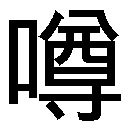

| ガガガ文庫 GJ部中等部3（イラスト完全版） | |
| 新木伸 | |
| (2013) | |
小学館ｅＢｏｏｋｓ
ＧＪ部中等部３
目次
ＧＪ部魂
小森ファイル①
小森ファイル②
小森ファイル③
小森ファイル④
小森ファイル⑤
おっとっとのひ
ハト時計
二代目カワイイ生き物
ハニーカム
セミマヨネーズ
おフロは何歳まで？
シスターズ
美醜の基準
ベストカップルはっぴょー
ゆゆしき事態
アンケート
小森さん感謝のひ①
小森さん感謝のひ②
ハロウィン近づく
ＴＳ
脳波ネコミミ
カッケー
こんにちは赤ちゃん①
こんにちは赤ちゃん②
こんにちは赤ちゃん③
フラれんぼ
ＧＪ部だいじっけん
ケンケンの特技
聖羅の趣味①
聖羅の趣味②
家庭科から世界の終末まで
霞のとっくん①
霞のとっくん②
霞のとっくん③
霞のとっくん④
あとがき
ＧＪ部魂
とある秋の一日──。
プリッツをくわえた霞が、暇そうに天井の隅っこを見上げている。そんなタイミングを見はからって──ジンジンは霞に声をかけた。
「四ノ宮先輩。ちょっとお訊きしたいことがあるのですけど。よろしいでしょうか」
「なに？ なんでも訊いて」
霞はすぱっと顔を向けた。お姉さんの顔で、お澄まし声になって言う。
「よく〝ＧＪ部魂〟という言葉を聞くことがあるんですけど。それは一体なんなのでしょう」
「それはダメっ」
手を大きくバッテンにクロスさせて、霞は言う。
「いえ。しかしですね──」
普段であれば「わかりました」とあっさり諦めよく引き下がっているところだったが、今回の質問は、だいぶ考えたうえでの質問だったのだろう。彼にしてはめずらしく食い下がる。
「──僕もこの部の一員である以上。活動理念について知っておくべきだと思うのですよ」
「そういえば、わたくしも訊いていませんでしたわね。──ＧＪ部魂がなんであるのか」
紅茶のカップを優雅にソーサーの上に置いて、聖羅もそう訊いた。
「そうですよ。ほら天使先輩もそう言ってます。さあ教えてください」
「ゔ？」
ジンジンと聖羅の連合軍とに攻められて、霞はうめき声をあげた。
部にいる他の面々も、この話題には興味があるのか──。皆、顔を向けてきている。ケンケンはマンガを下ろして。ジルはホワイトボードに動物を描くのをやめて。そして部室の隅でサスペンドしていた小森さんでさえ、顔をこちらに向けてきた。
「えーと......。おほんっ」
霞は椅子から立ちあがると、咳払いを一つした。おもむろに話しはじめる。
「──ＧＪ部の活動目的は、ＧＪ部魂を追求することです！」
「ですからそのＧＪ部魂というのは、なんなのでしょう？」
「ＧＪ部魂を追求することです！」
霞は両手を握りしめて、前を見つめて、そう叫ぶ。
「いえですからですね......。四ノ宮先輩？ そのＧＪ部魂というのは──」
「追求するんだもん！ するんだもん！ するんだも......っ」
じわーっと、霞の目に涙が れはじめる。
れはじめる。
「するんだも......、う......、うわーん！」
泣いた。泣いちゃった。
「うわばかおい仁！ やめろ！ 泣いたぞ！ おまえ女泣かすなよ！ ばかっ！」
ケンケンが慌てた顔で言ってくる。その親友にジンジンは醒めた顔で返す。
「なにいってるんだ。こんなのうそ泣きに決まってる」
「ちぇ。バレたか」
霞はあっさりとそう言った。〇・一秒前まで泣いていたのだが。
「うおっ！ うそだった！」
ケンケンは驚いている。すっごく、驚いている。
「仁！ おまえすげーよ！ すごいやつだよ！」
「普通見抜けるって」
「そうでもないよ。お兄ちゃん一回も見抜いてきたことないよ」
「それはきっと優しさなのだと思いますよ」
ジンジンが上手に美しく話題をまとめきった。
「──おいカスミ！ それでＧＪ部魂ってのは、なんなんだよ！」
まんまと化かされていたことが恥ずかしいのか、ケンケンが強く訊く。
「うわケンケンが覚えてた！ 三秒以上経ったから忘れていると思ったのに！」
「おまえおれのことバカにしてるだろ」
「訊くの？ また泣くよ？」
霞はじっと、恨めしそうな目で返した。だがケンケンも、さすがに二度は騙されない。
「泣けよ」
「追及しないでよ。追求しようよ。追及は楽しくないよ。追求だと楽しいよ？」
「なにいってんのかわかんねーよ」
「わからないとしたら、それはケンケンがバカだからだよ」
『ほらケンケン君。〝追及〟と〝追求〟とで漢字が違うんだよ。追及は〝追い責めること〟で、追求は〝追い求めること〟──って、広辞苑より』
ジルがホワイトボードに文字を書いて示す。
「わたくしは他にも〝追究〟なども楽しいと思うのですけど。弟いじりを追究したいですわ」
『〝追究〟は学問などを極めることだよねー。広辞苑よりっ』
そのとき──。すうっと、いい匂いが皆のあいだを抜けていった。
空になっていたカップに、赤い液体が満たされる。ＧＪ部の〝紅茶番〟である小森さんは、皆が話しこんでいるあいだに紅茶を入れていたのだった。
「紅茶を追給します」
「うまいっ！ 小森さん！ ザブトン一枚っ！」
本日の部活動は小森さんが持っていった。
小森ファイル①
「九月三日。一六〇五──。ＧＪ部部室にて──」
新学期もはじまって間もないその日──。
小森さんが手にした小さな機械に向かって、そんなつぶやきを向けていた。
「なにやってるの。こもりん？」
「あれはＩＣレコーダーですね」
霞の問いにはジンジンが答えた。
「音を録音する機械ですよ。録音専門のメカですので一般的ではないですけど。ほらテレビで記者の人などが、政治家の方とかに向けていたりしますよね」
「ふ～ん......。で。こもりんはなにをやってるの？」
「さあ。そこまでは」
《使えないスケコマシですわね。わからないなら黙っていればよいのです》
聖羅の《副音声》が今日も黒々と響く。霞は「それは言っちゃいけないコトだよ!?」という顔で慌てているが、当のジンジンは平然とした顔。皆に聞こえている《副音声》が、ジンジンにだけは聞こえていないという説もある。
「こもりんではなく、小森です。──ではローテーションに従いまして、四ノ宮様から」
ＩＣレコーダーが霞に向けられる。
「な、なにかなっ？」
ＩＣレコーダーを向けられて、霞は緊張した顔になる。
「取材です」
と、小森さんは表情をまったく変えずにそう言った。
「クラスの級友の皆様方と、最近、親交を深めておりまして......。そうしたら色々と訊かれるわけです。このＧＪ部のことについてだとか」
「うちの部ってそんなに有名？」
「皆さん興味津々です。この部がなにをやっている部なのかとか。あと部員の皆様のことだとか。それで私は皆さんのことをあまりよく存じあげませんので、直接、ご本人に訊いてみようと思った次第です」
「えらい！」
小森さんの話に、霞は相づちを打つかわりに──いきなり褒めた。
「は？」
「こもりん！ それは立派なＧＪ部の部活動だよ！」
「そうなのですか」
「うん！ そう！ ＧＪ部魂だよ！ 〝元祖ＧＪ部活動記録集〟にもありました！ インプレッションだとか！ もうバッチリ！」
「はあ......。それで四ノ宮様のインプレッションなのですが。長所と短所をお願いします」
「うーん......と、そうだね......。えーと、あたしの長所はァ......」
と腕組みをした霞は、天井を見上げて考えこむ。
「──まずなによりも！ 優しいところだよね！」
霞は確信に満ちた顔でうなずいた。だが霞以外の他の皆にあるのは、「そうかぁ？」という疑惑のカオ。皆を代表してケンケンが口を開く。
「こいつのどこが優しいんだ？」
「優しいでしょ！ いっつもお菓子あげてるでしょ！」
ケンケンにヘッドロックをかまして、ぐりぐりギリギリと〝ウメボシ〟を決めにかかる。
「霞さんの良いところといえば、そちらの方面ではなくて、やはり元気なところですわよねえ」
頰に手をあてて聖羅が言う。ジルもこくこくとうなずいている。
「四ノ宮様の長所──元気なところ」
小森さんがＩＣレコーダーに吹きこんでいる。本人申告のほうはスルーで、他人の申告のほうが採用されている。
「それでは次に四ノ宮様の短所など」
「キョーボーなところです！」
両のコメカミをぎりぎりと責め苛まれながら、ケンケンが申告する。しかし皆はあまり納得しないカオ。
「なんていいますか。四ノ宮先輩は、たまに論理的整合性を欠くことがありますよね。話していて困るときがあります」
「そこが可愛いのですわ。ジンジン貴方はまったくなにもわかっていませんわ。残念なところが良いのです」
『霞ちゃんとお話ししていると、楽しいよー。意外性あって』
各者各様であるが、誰も否定はしない。
「やーい。アホー！ アホの子ー！」
ヘッドロックを受けたままで、ケンケンが囃し立てる。チャレンジャーのケンケンは、霞の手によって、さっそく〝頭蓋骨の強度〟の限界テストにかけられている。
「四ノ宮様の短所──アホの子。残念なところ」
小森さんがＩＣレコーダーに声を吹きこむ。
「だめー！ それ録音しちゃだめー！ ちがうから！ あたしアホの子じゃないからー!! 残念でもないからーっ!!」
霞の声が響き渡った。
小森ファイル②
「次は......。わたくしの番ですわね」
長い黒髪を手で払って、聖羅が言う。
小森さんも、こくんとばかりにうなずいた。
ＧＪ部には「ローテーション」なるものがある。霞が一番最初。次が聖羅。三番目がジルとなる。男子のほうではジンジンのが先。ケンケンの番は、来なかったり飛ばされたりする。
椅子に深く腰掛けて、胸を張って凜然と──聖羅は言う。
「わたくしの長所は──。やはり、〝優しい〟ところでしょうか」
「えっ？」
聖羅の言葉に、ぽかんとした顔を向けたのは──。誰あろう、親友の霞。
「ぜんぜんだ」
そしてひと言のもとに一蹴したのは──。ケンケンだ。
『うんそうだよね。聖羅ちゃんは、どっちかっていうと......、カッコいいとか、凜々しいとか、そっち方面なのかなー』
「僕も同感です。天使先輩には、どこかスピリチュアルでオカルティックな印象があります」
「そ、それは、ど......どういう意味ですの？ 良い意味なのか、悪い意味なのか......。ジンジン、貴方、もっとはっきりものをおっしゃい」
自己イメージをよってたかって否定され、聖羅はすっかり自信を喪失した顔だ。
「いまは長所の話ですから、当然、良い意味のつもりですけど」
そう肯定されて、聖羅は少しほっとした顔になる。
「具体的にお願いします。──スピリチュアルでオカルティックな印象とは、つまり、具体的にいえば、どのようなイメージなのですか？」
始終冷静な顔で小森さんが突っこみをいれる。
「そうだよジンジン。日本語話して！ ジンジン語！ 禁止っ！」
「ええっ？ 日本語ですけど......」
「これは是非ジンジンの回に入れねばなりませんわね。小難しい言葉をすぐに使いたがる、こじらせた自意識をはみ出させているスカした小僧と──」
「セラちゃんセラちゃん！ それ黒いほうだよ《副音声》のほうだよ！ 口に出ちゃってる！」
「皆さんがいつも言われる《副音声》というのは、いったいなんの......？ いえ。まあ僕のことについては自覚がありますので......、直します......。はい」
ジンジンは殊勝な顔でうなずいた。そして言葉を続ける。
「しかし、うーん......。カタカナの外来語を使わないとなると......。難しいですね......」
しばらく言葉を探して天井を見上げていたが──。ややあって、眼鏡のブリッジをついっと持ちあげて、話しはじめた。
「どこか自分たちの手の届かないところにいる神秘的な存在──というような意味でしょうか」
霞が「わかんない」というカオになる。
ジンジン仕様から一般仕様にデチューンされた言葉でも、霞にとってはやっぱり難しい。
「つまりだな。〝怖ええ〟ってことだ」
「なるほどっ！」
ざっくりとまとめたその言葉に、霞が膝を叩く。ジンジンも我が意を得たりと感心した顔。
「どこが長所なんですの。それどこが褒めてるんですの」
聖羅が唇を尖らせる。
「それでは聖羅様の短所につきまして」
長所のほうはそれで片付いたらしい。小森さんがＩＣレコーダーをまた本人へと向ける。
「わたくしにはありませんわ。短所なんて」
『聖羅ちゃんって、意外と、日常生活スキルが低いよねー。技術・家庭──１だっけ？』
「り、料理とかは......、べつにできなくたって......、我が家は森完備ですので」
聖羅は、つーんとお澄まし顔。
「そういえばセラちゃんこのあいだ！ 駄菓子屋でカード出してた！」
「あれは......。知らなかっただけです。アメックスの使えない駄菓子屋があることはもう覚えましたわ」
「女子のチクり攻撃。まじこえー。──なぁ。仁」
「邪魔するものじゃないよ。健太。あれは彼女たち流のコミュニケーションなんだから」
「言ってらっしゃいな。小僧ども。覚えてらっしゃい」
「セラちゃん今日はさっきからずっと《副音声》が、はみだしてるってばー」
「なーなー。おめーら、聖羅の弱点っつーたら、アレ言わないとだめじゃんかー」
「弱点って？ ......お面とか？」
ケンケンの言葉に霞が首をひねる。聖羅にはお面をなくすと落ち着きがなくなるという弱点があったのだが、それはすでに克服済みだ。〝特訓〟によって三十分まではＯＫとなっている。
「ちげーよ。カワイイとこだよ。ふだんは、ツエー最強キャラなくせに、たまに、よわよわになるところだよ」
「うんセラちゃんカワイイよねー。でもそれ弱点じゃないよ。ケンケン？」
「ばーか。カワイイっつーのは、弱点に決まってんじゃん」
「ばかっていったなー。このバカ。男のコはそうかもしんないけど女のコはちがうのー！」
言いあいに発展する二人のその脇で、聖羅は顔を赤く染めあげていた。
「か、か、か......かわいくなんて。ありませんから。ありませんのよ」
小森ファイル③
聖羅の赤面が一段落ついて、しばらくした部室で──。
マーカーを手に握ったジルは、右を見て、左を見て、そして──。
「Oops」
──と、そう口にした。
英語で「おっと」とか「しまった」とか「いけない」とかいう意味だ。
そして彼女は、ホワイトボードに書き書き。マーカーで白い板面に書いた文字を、皆に見せる。
『そっか。つぎ。わたしの番だっけ。皆さん。お手柔らかにお願いします』
ジルはぺこりとお辞儀をした。ホワイトボードの中では、イラストの熊さんも、ジルと同じようにお辞儀をしている。
「はいはいはいはいはい！ こいつのヤバいとこ！ 俺、俺、俺、俺、俺が言います！ チクります！」
もの凄い勢いでケンケンが手をあげる。
「ケンケン。キミはいまチクるとかそお言った。あと最初は〝いいところ〟だから。〝わるいところ〟は、あとだから」
霞がケンケンの頭を上から押さえこんで、そう言った。
ジルは微笑みの脇に、たら～りと冷や汗を流していた。
さっきまで人のことだったから気楽なものだったが。いざ自分の番が回ってきて、事の重大さが、ようやくわかったという顔だ。
「えーと。......おほん。ではジルちゃんの〝いいところ〟から！」
「女性らしいところでしょうね」
一番にそう言ったのは、自他ともに認めるフェミニストのジンジン。
「だよねー」
その意見には、霞も大きくうなずいた。
「──ジルちゃんお料理とかも得意だし。包丁じゃないナイフがごつくて物騒だけど。お裁縫とかも得意だし」
「べつにそういう技能的な部分を言ったつもりではないのですが......。いわゆるグローバルイメージとしての〝女性らしさ〟というものは、現実の女性のなかにはかえって見当たらないものであると、僕は自己の体験によって断言できます。僕のお世話になっている家は、いわゆる女系大家族的なところなのですけど。姉的な人も妹的な子も叔母的な人もたくさんいらっしゃいますが。ええまあ。推して知るべし......というやつでしょうか」
「ねえ？ なんかジンジンが女性を語っちゃっているよ？」
「霞さん。面白いからやらせておきましょう」
「そんななかにありましてもジル先輩は希有な方だと思うのです。心根といいますか。あらゆる物事に対しての温かな愛情といいますか。ジル先輩が自然のなかで育たれたことと、なにか関係があるのでしょうか。ともかくそういった部分が、僕が〝女性らしい〟といった点で──」
ジルの袖をしきりに引っぱりながら、霞が言う。
「なんかジンジン口説いちゃってる？ ジンジンって、ジルちゃんのこと好きだった？」
「そういう話ではないのですけど」
ジンジンがしらっとした視線を霞に向けた。ジルは穏やかな笑みを霞に向けている。二人とも、色恋疑惑を否定さえしない。まったく超然としたものだ。
「ジル様の長所は──〝愛情豊かなところ〟」
ＩＣレコーダーに小森さんが声を吹きこんだ。長所に関してはそれで片づいたようだ。
聖羅がぷいっと顔を背けて、「ずるいですわ」と口にする。横がけにしている狐のお面が皆のほうに向けられる。いいところが〝こわい〟とされてしまった聖羅は納得いかない顔だ。
「じゃあつぎ！ 俺俺俺！ 俺もう言っていーい！ 俺俺俺っ！」
『お手柔らかにね──。ケンケン』
本人の許しを得て、ケンケンが盛大にチクりはじめる。
「こいつ！ このオンナ！ キョーボーです！ 人を窓からつるします！ いけないとおもいます！」
「学級会かっ」
霞が愚痴る。ケンケンは以前、ジルにイタズラを何度も仕掛けて、ついには、きっつい〝おしおき〟をくらっていた。
『あれはね。ケンケン。躾っていうんだよ。口で言ってもわからない人には、言葉以外の方法でわかってもらわないと、だめだよね？』
ジルはにっこりと微笑んだ。その微笑みの裏になにを見たのか──。
「ハイ」
ケンケンは素直にうなずいた。その肩と背中が、ガクブルと小刻みに震えている。
「ジルちゃんって見かけによらずワイルドなとこ、あるよねー」
お気に入りのおやつのポッキーを揺らしつつ、霞が言う。
皆はそれぞれの顔でうなずいた。
クラスで飼ってるウサギさんを、どーしても食べたくなっちゃって困ってみたり。姉譲りの野性のパワーを秘めていたり。ＧＪ部の中で一、二を争う、謎多き女の子である。
「ジル様はワイルド──と。以上です」
小森さんがまとめた。
小森ファイル④
「さあスカし小僧の出番ですわよ」
さっきの恨みを忘れていない聖羅が、ぽつりとそう言った。
「勘弁してください。......お手柔らかに」
苦笑しながらジンジンは言う。
「はいはい！ まずはいいところから！」
霞の議事進行に従って、各自がさっと手をあげる。
「はい！ ジルちゃん！」
『ジンジン君は。女の子に優しいよね』
そう書かれたホワイトボードには、絵もついている。霞の椅子を引いてくれてるジンジン。聖羅のペットボトルの蓋を開けてくれているジンジン。
最後の絵は、高いところの物をジルに取ってくれているジンジン。
「ああ。そっかそっかー。背はジンジンがいちばん高いんだねー。みんなの中で一番だー」
霞がしきりにうなずいている。ジンジンの頭を、ぽんぽんとお姉さんぶって叩いた。
「やっぱ優しいよー。ジンジンは。いいコいいコー」
「それは生存戦略だという説が濃厚です。姉的な人とか。妹的な子とか。数えますと......」
そう言うジンジンの両手の指は、全部折れて、さらには二周目にまで突入してゆく。
「ではジンジンの〝良いところ〟は背が高いということで」
流れをぶった切るように、聖羅がぼそっとつぶやきを放った。
「ちょ──ざっくりとまとめすぎじゃないですか？ 背なんて男子ならたいてい高いですけど」
「じゃあケンケンは？ ケンケンはぜんぜん低いよ？」
「ほっとけ！ 俺はこれから伸びるんだ！」
「あ。気にしてたのか」
ケンケンの頭に手を伸ばして、ぐうりぐうりとやりながら、霞は言う。
「大丈夫だよ伸びるってー。だってケンケンはガンダムになるんだもんねー。どんどん伸びなきゃねー。あれって身長十何メートルくらいあるっけ？」
まったくどうでもいい感じで、霞はケンケンを励ました。
「僕の話だったはずですけど」
「もちろんですわ」
聖羅がうなずく。
「──では〝良いところ〟がめでたく片付きましたので。つぎに〝いけないところ〟ですわね」
聖羅が黒髪を払って、楽しげに──じつに楽しげに、そう宣言する。
「天使先輩の悪いところ。──その二。〝執念深い〟ところ」
ジンジンが小森さんのＩＣレコーダーに、そんなことを吹きこんでいる。
「ちょ──！ なにを！ なにを言って──!? わたくしのは番はもう終わったでしょう！ 小森！ 消しなさい！ それを！ いますぐに！」
聖羅は慌てて小森さんに迫るが、小森さんはＩＣレコーダーを後ろ手に隠して、ふるふると顎を振るばかり。
「セラちゃんって、なんで今日そんなジンジンに厳しいの？」
「オカルティックで怖いだなんて言うからです」
「あれ長所のほうのつもりだったんですけど......」
「しりませんわ」
「天使先輩の悪いところ。──その三。〝女性〟なところ」
またまたジンジンはＩＣレコーダーにそう吹きこむ。
「許します」
つんと胸を張って、聖羅は宣言した。
「ええい。許すと言ったら許します。忘れなさい。忘れなさいというに」
「ねー。いまジンジンの話だよー。ほらジンジン。弱点ないしは悪いところないしはイケナイところー」
霞の催促を受けて、ジンジンは咳払いをひとつした。
「ええと......。僕の短所は......ですね。まず小難しいところです。理屈っぽいところです。そして次にスカしているところです。あとなんでしたっけ？ そうそう。自意識をこじらせているという指摘もありましたっけ」
ジンジンは誰に指摘されるまでもなく、自分から次々と申告してゆく。
まったくノーダメージ。効いてないヨ。──とばかりに、平然とした態度をアピール。
その様子に、聖羅は、にんまりと──まったく楽しげに、目を細めた。
「このスカし小僧の最大の短所をいま見つけましたわ」
「なんでしょうか？ 僕の記憶に間違いがなければ、これでもう指摘されたものは全てのはずですが」
年上の女性の目を正面から見つめて、挑むようにジンジンは言い返す。
「ヘタレなところです」
──と、聖羅はそう言いきった。
「ダメージを受けることを怖がるあまりに、予防策を打っておくとは、なんと香ばしいヘタレなのかしら。きっとＲＰＧではレベルＭＡＸまで上げてから竜王に挑むタイプですわね」
「うぐぅ」
ジンジンの口から、呻きとも言葉ともつかない音が洩れだした。
小森ファイル⑤
「じゃあ最後。出番だよー。ほらほらっ」
霞がそう言ってケンケンを見やる。
自分の出番が待ちきれずに「俺俺俺俺俺」といつもうるさいのがケンケンという子なのだ。
そんなケンケンがかわいくておもしろくて、いつも霞は〝おあずけ〟をしてみたり、番を飛ばしてなくしてみたり、〝いじわる〟をしてしまうわけだが──。
「あ。俺。いいよ......」
ケンケンはふいっと向こうを向いてしまった。後ろ頭ばかりが、霞たちに向けられる。
「......あれっ？」
霞は首を傾げた。うるさいはずのケンケンは、そういえばジンジンの番あたりから、すっかり静かになっていた。霞や聖羅やジルのときには、ノリノリで欠点をあげつらっていたのだが。
「健太の悪いところは......、意外と打たれ弱いところ、でしょうか」
自分の番が終わったジンジンが、すっかりくつろいだ顔で、紅茶をくぴくぴと飲んでいる。
「あと意外と弱虫だったり。痛みに耐性がなかったりします」
「俺！ ちゅーしゃはへーきだもん！ い、いたくねえもん！ ねえからな！」
「僕の言ったのは心の痛みのほうだけど」
「あー。なんか。あたし。わかってきたぞー」
「わたくしもわかりましたわ。注射のときって、順番が最後になっていたりすると悲惨ですわよね。皆が注射されてゆく場面を、ずーっと、延々見せられることになって......」
霞と聖羅が言っているのは、皆の「欠点さらし」を見ているうちに、ケンケンが恐れをなしてしまったという仮説だ。
『男の子って痛いのに弱いのかな？ ジンジン君もけっこう弱々だよね』
「ぼ......僕はっ、まだ健太よりはましだと思いますけど」
「丙丁つけがたいですわ」
「セラちゃん。〝へいてい〟って、それなーに？」
「さあ。森にきいた言い回しですから」
顎を振る聖羅のかわりに、小森さんが答える。
「甲乙丙丁。──すごく昔の通知表で、一番下が〝丁〟で、下から二番目が〝丙〟となります」
「つまり通信簿の一と二かー。なるほどー」
「俺のばん......。とばしてください......。たのんます......」
ずっと黙っていたケンケンが、そこで、ぼそっと小声でつぶやいた。
「すごい！ ケンケンが敬語つかった！ つかえたんだ!?」
驚いた顔をした霞だが──ややあって、小森さんのＩＣレコーダーに声を吹きこみはじめる。
「えーとねっ。ケンケンの悪いところはねっ。まず無神経なところ。それから敬語使わないところ──使えるのに。あとなんといってもバカなところ」
「ばかなのは長所のほうかもしれません」
と、そうフォローしてきたのは小森さん。
「うんだから。バカなほう。ばかじゃなくてバカのほうね」
「了解しました。同意です」
「あ......。う......。俺......。俺......」
ケンケンは椅子の上で膝を抱えた。いまにも泣き出しそうな顔になっている。
「じゃあまあ。欠点のほうはこんなところでいいよね。次はケンケンのいいところ探しです！」
霞が大声で宣言する。ケンケンの泣いちゃうタイミングをすっかり把握している。
「カッコいいところですわね」
意外なことに、最初に発言したのは聖羅だった。
「俺......、カッコいいの？」
《無謀と蛮勇とを格好いいと解釈する向きも世の中にはあるようですから、そうした意味では格好いいと言えますわね》
なぜか《副音声》のほうで聖羅の肯定は返ってくる。
難しいところをすべてすっ飛ばして聞いたケンケンは、ぱあっと顔を明るくさせた。
「俺......、カッコいーのか！」
《ちょろい小僧ですこと》
『あとケンケン君は、友達思いだよね』
「俺！ 仲間はぜったい見捨てねーから！」
ケンケンはますます明るくなった。
「健太の良いところを、この僕が語らなくて、いったい誰が語るというのでしょう」
ケンケンの親友であるところのジンジンが、眼鏡のブリッジをついっと持ちあげる。
「──健太の良いところは、男らしいところです！」
「あーうん。そっか。ケンケンがヒーローで、ジンジンはヒロインだったよね。うんうん」
「ほら最後。霞さんですわよ」
「ほへ？ あたし？ あたしは......、えーと......。なんだっけ。ケンケンのいいところは......」
しばらく天井を見上げて〝いいところ探し〟をしてから、霞は──。
「うんそう。熱血なところ。ほらこもりんのとき、ケンケン正義のために立ちあがったじゃない。うおー！ ってさ。こもりんイジメるのだれだー、って。あれ結局、勘違いだったけどさ」
霞に〝いいところ〟を承認されて、ケンケンは完全復活を果たした。
「そうか俺はすでにガンダムだったか！」
おっとっとのひ
「きょうのーっ......、スペシャルーっ......、おやつはー......」
もぐもぐ。もぐもぐ。
いつもの放課後。いつものせまい部室。
霞の「宣言」も途中で止まり、皆は黙々と、「本日のスペシャルおやつ」を食べていた。
皆が食べているのは〝おっとっと〟という昔からあるお菓子。
薄塩のついたポテト風味のスナック菓子で、一個一個が、海の生き物の形をしている。一個食べると、もう一個、もう一個と、キリがなくなってしまう系のお菓子であった。
皆は本当に無言で食べつづけている。
「あたしまだタコたべてない」
宣言も途中のまま黙々と食べていた霞が、ぽつりと、そんなことをつぶやいた。
しかし誰一人として取りあわない。一つの箱が空になってしまうと、二つ目の箱が開かれる。
新しい箱が開かれたところで──。
わしっと、ケンケンが手づかみで十数個を手の中に収める。
その手が、ぱしっと叩かれる。
ぱし。ばし。バッチーン！
霞の放った一発目に続いて、二発、三発、四発──と、ケンケンが握ったお菓子を離すまで、女性陣それぞれの一撃がその手を襲う。
「ケンケン。お行儀悪いですわ」
『ケンケン。だめだよ。一個ずつがルールだよ』
「なんでトモちゃんまで」
ケンケンは手の甲を押さえながらそう抗議した。小森さんによる最後の一発がいちばん強烈だった。ものすごいしっぺを受けたようにケンケンの手の甲は赤くなっている。
〝トモちゃん〟とケンケン専用の愛称で呼ばれた小森さんは、素知らぬ顔で、こりこりとお菓子をかじっている。
「ケンケン。あたしまだタコたべてないんだけど」
霞が恨めしそうな声をして、ぼそっとつぶやいた。
「しらねーよ」
〝トモちゃん〟にまで裏切りを食らって、ケンケンはぷいっとそっぽを向いた。
そのまましばらく、「本日のスペシャルおやつ賞味会」は平和に続く。
「あら。タコですわ」
聖羅がぽつりとそう言った。ぱくりと口に入れる。
「た！ たべた！ セラちゃんたべちゃったーっ！」
「どれを食べてもいいんじゃありませんの？」
「よくないよ！ ＧＪ部魂だよ！」
「それあんまり関係ないと思いますけど」
聖羅は釈然としない顔で首を傾げる。そのあいだにも、一個、二個、お菓子を口に運ぶ。
「僕の推理するところによれば。四ノ宮先輩は全種コンプリートなさりたいのかと」
「そう！ そこ大事！ ジンジンよく言った！ エラい！」
「まあ推理はできましても、僕にはその気持ちはまったく理解できませんが」
「ひどい！ ジンジンひどい！ スケコマシ失格だよ！ オート・スケコマシ発動させてよ！」
「そもそもこれって何種類あるんでしょう？」
ジンジンは〝スケコマシ〟扱いされても言い返すこともなく、黙々と食べつづけながら、箱の裏をひっくりかえした。特に書いてはいない。
薄塩ポテト味の海の生き物お菓子は、形が何種類もあるようだった。
「あ。タコだ」
ケンケンがぽつりとつぶやく。
「だめーっ！ たべちゃだめーっ！ ちょうだい！ それちょうだい！ 部長命令っ！」
「うっそぴょーん」
てへぺろと、ケンケンが舌を出す。
ものの見事に引っかかって──。ものの見事に霞は落ちこんだ。
「霞さんが、今日は見事にイジられキャラですわね。......ふふっ。可愛いわ。霞」
聖羅が片手の小指を口元にくわえる。指先についた塩をぺろりと舐め取る。
「僕もやっぱりよくわかりませんね。そんなにやりたいものなんでしょうか。フルコンプリートって......あ。タコだ」
「ウソっ!?」
「うそです」
ず～んと、霞はまた落ちこんだ。
「ああっ......。だめっ。わたくし。もうだめ......自分を抑えられそうにありません。ねえ霞さん？ タコさん、いまここにいらっしゃいますけど。お食べになります？」
「もう引っかからないもん！」
「じゃ食べてしまいますわね」
聖羅はぱくりとタコさんを食べた。
「ああーっ!?」
その日、霞は、おっとっとの箱が空になるまで、いじられつづけた。
そして結局霞は、フルコンプリートならずに終わった。
ハト時計
「すっごいもん！ もってきたーっ！」
いつもの放課後。いつものせまい部室の戸を「ばーん」と開いて、霞が乗りこんできた。
皆は何事かと視線を向ける。
霞は小脇に、黒塗りの木製の物体を抱えていた。鳥の巣箱みたいな、山小屋みたいな、そんな造形の木製の物体だ。
「時計......でしょうか？」
物体についている見慣れた丸い文字盤を見て、ジンジンがそう推測を述べる。
「ただの時計じゃないよー！ ハト時計なんだよー！ 使わないからって、もらってきたー！」
「なんでしょうか？ その〝ハト時計〟というのは」
「ふっふっふ......。ジンジン。キミは電気で動かないモノには、まったく詳しくないねー」
霞はお澄まし顔になって、立てた指を左右に振り振り。
「この時計は電気ではうごかないのです！」
「ではゼンマイかなにかでしょうか？ そういえば高級腕時計に機械式の物がありましたっけ」
「ぜんまいも使いません！ このハト時計は！ ななな！ なんと！ オモリで動くのです！」
ハト時計の本体からは、細い鎖が伸びていた。その先端には、けっこう重たげな鉄のオモリが取り付けられている。
「それはすごいですね」
なんとなく義理で言っている感じの褒め言葉がジンジンから返ってくる。
『そういえばこの部屋って時計なかったよねー』
「ですわね。べつに不自由は感じませんでしたけど」
ジルと聖羅はうなずきあった。皆はそれぞれ携帯を持っていて、そこには時計がついている。
「だめだよみんな。なんか温度低いよ？ ＧＪ部魂だよ？」
「ですからＧＪ部魂とはなんなのでしょう」
「考えるな。感じろ。──だってさ」
「なんですかそこの伝聞調。〝だってさ〟の部分はなんなのでしょう？」
「俺。時計なんか使わねーもんねー」
ケンケンは得意げに言うと、〝マイ携帯電話〟を持ち出してきた。ケンケンの〝携帯〟は糸電話だ。糸で繫がったもう片方の紙コップは小森さんのところにある。
「あーもしもし！ 俺俺！ トモちゃんいま何時ですかっ!?」
〝電話〟をかけられた小森さんは、絡んだ鎖を外す作業を中断して、窓辺に立ち寄る。校舎の時計に目を凝らす。
「四時十分前です」
「ありがとーだぜ！ ──みろ！ 俺！ 時計いらねーもんね！」
「なんかここまでくると、強がり通り越してアレだよね。優しい気持ちになっちゃうよね」
そんな話題をしているなか、小森さんが一人で粛々とセッティングを進めていた。しかし時計を設置する段になると、高い位置に手を伸ばす必要があって、小森さんでは背が足らない。
「俺やるぞー、トモちゃん」
ケンケンがナイト精神を発揮するが──どっこい、ケンケンと小森さんの背丈はほとんど同じだったりする。まったく役に立たないナイトであった。
「ほらジンジンの出番だよ」
「そうですわね。ジンジンの取り柄は背が高いところですから」
「僕でも届きませんよあんなとこ。素直に椅子を使えばいいんじゃないでしょうか」
「すごい！ ジンジン！ 頭いー！」
「たしかこれチンパンジーの知能テストだったような気が......」
ハト時計は天井近くに取り付けられた。鎖の先の長いオモリが床の近くまで垂れ下がる。
時計は現在時刻に合わされた。午後四時の二分前である。
「ほらみんな注目っ！ 四時ちょうどになるとね！ なるとねっ！」
霞は皆をハト時計の下に呼び集めた。
「時間になると、いったいなにが起きるのでしょう？」
『楽しみだねー』
皆でかたまりになって、時間が来るまでの一、二分を、ぼんやりと見上げて過ごす。
そして四時ちょうどになった。
──ポッポー！
突然、小窓が開いた。ハトが飛び出してきた。鳴き声が室内に響きわたる。
「うおお！ ハトだ！ ハト出てきた！ ないた!!」
ちょうど四回の鳴き声をあげると、ハトは戻っていった。ぱたりと戸が閉まる。
「えへへーっ......！ どうどう？ いいでしょ？ いいでしょー？」
霞は自慢げに言った。
「凄い仕掛けですね。......電気も使わないで、オモリの重量だけで、いったいどうやっているんでしょう？」
「一時間ごとに、時刻の数だけ鳴くんだよ。いま四時だから四回！ 五時なら五回！ あと三十分ちょうどにも一回ずつ鳴るよ」
「すっげー！」
ようやく皆がノッてきて──霞は鼻高々だった。
「どや！」
二代目カワイイ生き物
「二代目カワイイイキモノと認定します」
いつもの放課後。いつものせまい部室。
いつものように腕を衝きあげはしないけど、天井を向いて話すくらいの、中くらいのテンションでもって──。
霞がそう宣言した。
「なんですかなんなんですかそれは」
その霞の言葉に、まっさきに反応したのは、ジンジンだ。
「二代目ってなんですか。それは初代がどこかにいるっていう意味ですか。てゆうか僕のどこがカワイイっていうんですか。あのですね。僕だっていちおう男の子なんですから、男の子っぽくないとか言われたらそりゃ傷つきますよ。もし自覚なしで言われているのでしたらこの機会に言っておきますけど。女性にカワイイは褒め言葉だと思いますが、男子に対してそれは良くないと思います」
いきなり長文になったジンジンに、霞は、ぽかーんとした顔を向ける。
「あたしまだなにも言ってないけど？」
「え？」
「カワイイ生き物が誰のことだなんてべつに言ってないから」
「あああ──すいません。やらかしちゃいましたか。自意識過剰ですね。ほんとすいません」
「てゆうか。そうだけど。正解だけど。ジンジンのことだけど」
霞はしれっとそう答えた。
ジンジンは顔色を変えた。
「やっぱりそうじゃないですか！」
「すごい。これ。おもしろいよ。──ねえねえ。セラちゃん。ジンジン。いまなにかすっごく面白いからっ」
霞に袖を引かれた聖羅は、こくんと、首を折って返してきた。
「加減が大事ですわ。オモチャは壊さぬようにして遊ばないと」
「やっぱり皆さんで僕のことをオモチャにして遊んでいるわけですね。わかりました。わかりましたとも」
毅然とした顔になって、ジンジンが席を立つ。
このあたりでようやくケンケンがマンガ雑誌を置いた。なぜかエキサイトしているジンジンを見上げるその顔に、ぽか～んと「？」が、いくつも浮かんでいる。
霞は膝の上に手を置いた。
慌てず騒がず、戸口に向かっているジンジンに声をかける。
「──つきましては、初代の人とのお茶会をセッティングしましたー。いろいろと秘訣とか。伝授してもらってくることー」
「はい？」
部室の戸に向かっていたジンジンは、霞のその言葉に、足を止めた。
振り返って──。
「どなたと......会うと？」
「だから初代カワイイ生き物。──そう呼ばれているひと」
「ですから。なんなんですかそれは」
「もう到着されてますが」
小森さんが静かな声で答えてきた。
携帯を取りだした霞が、画面に目を向ける。
「あ。ホントだ。〝駅前の喫茶店なう〟──紫音さんもう来てるー」
ツイッターのタイムラインを見てそう言って、そして霞は、その顔を不思議そうに小森さんに向けた。
「──でもなんで小森さんわかったの？」
しかし小森さんは再びサスペンド状態に入ってしまっていた。返事はない。
「なんですかなんなんですか。紫音さんってどなたですか？」
誰にともなく質問を繰り出していたジンジンだったが──。霞たちに背中を押されて、追い出されるように、部室をあとにした。
そして一時間と少々とが経過して──。ジンジンが部室に戻ってきた。
「どだった？」
興味津々という顔で──。霞たちが、机から身を乗り出してジンジンに訊く。
「はぁ......。なんだか......。素敵なひとでした」
ジンジンは、ほうっとため息をついた。
「たいへんだっ！ ジンジンが恋しちゃったー！」
「なんていうか。僕が大人になったら......、ああいう人物になりたいですね」
またもや、ほうっとため息があがる。
「たいへんだっ！ ジンジンが男の娘を目指すって宣言したー！」
霞がどれだけ突っこんでも、ジンジンから訂正の言葉はまったく返らない。
壁を見つめて、ほうっと、ため息をつくばかり。
その日、一日、ジンジンはぼんやりとため息ばかりついていた。
ハニーカム
『えっとね。今日のスペシャルおやつは。honeycomb。です』
いつもの放課後。いつものせまい部室。
元気な霞の声のかわりに、ホワイトボードに書かれた文字が、今日のスペシャルおやつの存在を告げる。
「はにかむ？ って、なんだー？」
いつもは漫画雑誌から顔を上げないくせに、おやつのときには真っ先に反応する。そんな現金な反応も、ジルはお姉さんの目で優しく受け止めて──。
カバンのなかからビニール袋を取りだす。
『これが、honeyhcombだよ。ケンケン』
「うわなにこれジルちゃんなにこれなにこれー!?」
見慣れないお菓子に、霞がくわっと身を乗り出した。
ジルがビニール袋に入れて持ってきたのは──黄金色の美味しそうな色をした物体だった。お菓子かケーキのような感じだが、あまり見慣れないカンジ。六角形の小さな仕切りが整然と並んでいて工学部品に見えなくもない。
しかし色はたしかにお菓子の色。
「これなに？ ワッフルかなにか？」
「ばーか。おまえ。はにかむって、いまジルがそお言ったじゃん」
「おまえゆーな」
「honeycombとは、蜂の巣っていう意味ですわね」
髪をかきあげながら聖羅が解説する。
「カットした蜂の巣をそのまま缶詰にしたものは、よく見かけますわよ。これは生ですけど」
ちなみに聖羅の言う〝よくある〟は、おもに外国における話だ。
「へー。そうなんだー」
霞は素直に感心した。英語は得意な霞であるが、日常会話に出てこない言葉は、まったく知らなかったりする。ネイティブスピーカーとはぺらぺら話せても、ＴＯＥＩＣのスコアは、意外に伸びない。
「あっ。じゃあこれ。ハチミツなのかな？ 甘い？ ねえ甘い？」
『食べてみるー？』
黄金色の塊が、いくつかに割られて、各人のまえに差しだされる。指先についた蜜を、ぺろりと舐めとったジルに見習って、霞も手づかみで蜂の巣に挑んだ。
「あっま～～～～～い！」
「うめえ」
霞とケンケンは元気に食べる。蜜を吸い出すだけでなく、蜂の巣ごとぱくぱくと食べている。
「ちょ──。健太。四ノ宮先輩。それ巣のところって蠟じゃありませんでしたっけ？ 食べてしまっては体に良くないんじゃないですか」
『大丈夫だよ。ジンジン君。蜜蠟だから食べられるものだよ。蠟燭の蠟とは違うから』
「そうなんですか......」
言われて、ジンジンもおそるおそる、蜂の巣をかじりはじめる。
「これはなにか飲み物が欲しくなりますわね」
スプーンの先につけた蜂蜜を上品に味わいながら、聖羅が言うと──。
「紅茶だと色が悪くなります。レモネードに入れましょう」
小森さんが動いた。目の前に〝おそなえ〟されている自分の分には手を付けず、皆のために、せっせと飲み物の準備にかかる。
「あれっ......？ いまなんか......？」
霞がぽつりとそう言った。口をもごもごとさせて、それから手の上になにか白いものを、ぷっと吐きだした。
「なにこれ？ この白いの？」
『あっそれ。ハチノコ。いちばん美味しいところ♡』
「ハチノコ？ なにそれ？」
きゅるんと首を傾げて、霞は訊く。
『だから。ハチの子どもっ♡』
ジルはニコニコと答えてくる。
「えーと......」
霞は考えている。理解しようとしている。理解中......。
理解完了。
「こ、こ、こ、こどもって──ッ!? ハチの幼虫っ!?」
『うん。そう♡』
「うぎゃ──っ！」
霞は悲鳴をあげた。
「むし！ むしっ!? むしいぃぃ──!? 食べちゃった！ さっき一匹くらい食べちゃった！」
『何匹もいるから。食べて食べて♡』
ジルはわざわざほじりだして、白いハチノコだけの山を作りあげる。
「うぎゃ──ッ!!」
「うめえじゃん」
悲鳴をあげる霞の脇で、ケンケンが、ひょいぱくひょいぱくとハチノコを食べていた。
セミマヨネーズ
「ケンケンいないね」
いつもの放課後。いつものせまい部室。霞がどこか調子のでない顔で、ぽつりとつぶやく。
『ほんとだね。霞ちゃん』
「あらそういえば......。いませんわね」
ホワイトボードにそう書いて返してきたジルと、髪をかきあげる聖羅とは、それぞれ、気づいていた派と、気づいていなかった派。
「ケンケンがいないと......。静かですわね」
いま気づいたという顔の聖羅は、右を見て左を見て、そして手元のティーカップを見つめた。
「いつもは......ほら。ひょうっ！ とか。いっけー！ とか。たまに奇声があがりますので」
「ほらジンジンっ。小説読みながら奇声上げなきゃ。セラちゃんがご所望だよ。退屈だってさ」
「はひょう」
「やっぱやめたほうがいいと思うよ。向いてないよキミ」
「四ノ宮先輩がやれと言ったんじゃないですか」
そんなふうにケンケン不在の話をしていたとき──。
「つっかまーえたーっ！」
奇声とともに、がらりと戸が開く。そこに立っていたのはケンケンだった。
「なにケンケン。どしたの？」
「きょーのスペシャルおやつ！ とってきたぜー！ つかまえてきたぜー」
そう言ってケンケンは、手にぶら下げた〝虫かご〟をぐいっとつきだしてきた。部活に遅れて出てきた理由は、虫かごの中身を捕まえてきたかららしい。
「な、なにを......？」
みるからに嫌そうな顔になって──霞が訊き返す。
「このあいだジルにハチの巣とハチノコもらったじゃん！ だから俺も、うめーもん！ つかまえてきた！ もう九月になっちまってるからダメかと思ったけど。いたー!! みつけたー!!」
「だから......、なにを？」
椅子の背もたれの後ろに隠れる格好で、早くも逃げる体勢に入りつつ、霞が訊く。
「セミだよ」
虫かごを揺すると、ジジジジジ！ ビビビビビと中から大きな音がする。
「ぎゃーっ！」
霞は野太い悲鳴を張りあげて、部室の隅まで逃げだしていった。
『へー。これがcicada......セミなんだー。わたし。はじめて見たかもー。ほらカナダってセミいないから。夏のあいだ。声はよくしていたけど。どこにいるんだろうって思ってたー』
ジルは虫かごに食いついている。昆虫全般があまり得意でない聖羅は、半身を引きぎみにしているものの、霞のように逃げ出したりはしていない。
「霞さん。蝉とか苦手な人でしたっけ？」
「あっ......。そういえば......。あたし。へーきだった」
はっと我に返った霞は、立ちあがると、とことこと歩いて戻ってきた。
「なんだおまえ。女みたいに逃げだして」
からかうように言ってくるケンケンのその脇腹に、霞は、どすっと肘鉄を入れる。
「ケンケンが脅かすからだよ。セミを食べるとかオヤツにするとか、変なコトゆーから──」
「くうよ？」
ケンケンは虫かごに手を入れた。蝉の一匹を取りだす。そしてもう片方の手に持っているのは〝タッパー〟だった。その中には〝マヨネーズ〟が、たっぷりと──。
「こうすんのな」
ケンケンは蝉を生きたままマヨネーズに、どっぷりと漬けた。
「つけた」
「んで。こうな」
ケンケンは蝉をぽいっと口の中に放りこんだ。
「くった」
羽だけが指に残っている。それをぽいっと投げ捨てる。
「く......!? くった～～～～～っ！」
霞はわなわなと震える指を、ケンケンにつきつけた。ケンケンは霞がなにを騒いでいるのか、わかんない、という顔。
「うまいから。くってみろって」
「食わない！ 食わないからっ！」
霞が断固拒否の構えをしていると──。その脇で──。
『あっ。おいしいね。これ......』
ジルがもぐもぐと口を動かしていた。霞は信じられない、という顔で、友人の顔を見つめた。
「マヨネーズ、あうだろー！」
『あうねー』
ＧＪ部の野生児二人は、顔を見合わせて笑っている。
「健太は昔からセミが好物でして」
小説を読み続けているジンジンが、ページをめくりながらクールに言った。
「よいこは真似をしてはいけませんわ。よいこは真似をしてはいけませんわ。よいこは──」
聖羅と二人で抱き締めあって、霞はガクブルと震えていた。
おフロは何歳まで？
いつもの放課後。いつものせまい部室。
「うん？ フロか？ 俺いつも。パズーと入っているけど」
誰がはじめたというわけでもなく、なんとなく、お風呂話が始まっていた。
「なにそれ邪神？ パズーってだれそれなにそれ？ 犬か猫？」
「パズーはパズーだぞ。うちのねーちゃんだぞ」
「葉月さんという高校生のお姉さんでして。それでパズーで......健太はいつもそう呼んで、いつもしばかれています。まるで懲りません。健太ですから」
「へー。お姉さん......って!? ええ～っ!! あんたお姉さんと一緒にお風呂入ってんのっ!?」
何気なく始まった「お風呂の話題」だったが、ケンケンの何気ないこの一言が、ＧＪ部の部室を、阿鼻叫喚の渦へと叩きこんだ。
「バッ......!! バカっ！ アリエナイっ!!」
椅子を蹴立てて立ちあがった霞が、指を突きつけて──わなわなと震えながら、ケンケンを糾弾する。ケンケンのほうは、霞がエキサイトしている理由がわかっていないらしくて......。ぽかーんとしている。
「そっか？ へんか？」
「アリエナイよ!!」
霞はぎゅんとポニーテールの先を振って、皆に顔で尋ねた。こく、こく、こく、と三つのうなずきが返ってきたあと、ジンジンだけが一人、腕を組んで態度を保留させていた。
「だよね!? 中一でお姉さんとお風呂なんて絶対アリエナイよねっ!?」
霞は物凄い顔色と物凄い剣幕とで、ジンジンに迫るが──。ジンジンは眉を寄せて、なにを言っているのかわからない、という顔を返すばかり。
「いえ。僕は四歳から一人でお風呂に入っていますので。特殊例ですし。参考にならないかと」
ジンジンのカミングアウトに、場の空気は、一気にしんみりモードになる。
「それはぁ......。さびしいねえ。せつないねえ」
一人でお風呂に入っている幼稚園児を想像する。
皆で、うんうんとうなずく。
「このあいだ翔子さんが乱入してこようとしてましたけど。裸でお帰り頂きました」
ジンジンの姉的な人──〝高坂翔子〟の話が、なんでか飛び出してくる。
「兄さんは......、一緒に入ってくれないんですよね......。まえ。入ってもいいですかと訊いたんですよ。そしたらいま出るからと。すぐに出てしまわれて......」
今度は兄的な人──〝横溝徹心〟の話が飛び出してくる。ジンジンは悲しげな目を壁に向けている。
「こんど、うちとまりにくっかー？ いっしょにフロはいろうぜー」
「ぜひ」
「パズーと一緒に入るかー」
「だからそれはダメだって！ アウトだって！ ねえそうでしょそうだよね！ ジンジンまさかキミまでそゆこと言わないよね！」
「ええですから翔子さんにもご遠慮いただいたとさっき僕はそのように──」
「しらねーよ。パズーに言えよ。あとカーチャンだぜ。あいつらが勝手に入ってくんだよ。アタマごしごしやってシャンプー目にいれやがんだよ」
「健太の家は光熱費節約とかで、お風呂に続けて入る主義だそうです」
「だめだめ！ ぜったいダメーっ！ 中学一年は絶対にアウトだって！」
「そういう霞さんはいつまでお兄様と一緒にお風呂に入られていたんですの？」
──と。そこでこれまで静観していた聖羅が尋ねる。
「へっ？ あたしっ？」
不意打ちを食らったように、霞は慌て顔になった。
「そ、そんなでも......ないよっ？ け、けっこう早くに......、ひとりではいるよーに、なってたよ？ かすみ。ちゃんと。ひとりで。できたよ？」
「けっこー、って、どんなんだー？ おまえ。ぐたいてきに言えよなー？」
『霞ちゃん。一年生まで？』
ジルが訊くが、霞は首をぶんぶんと横に振った。ＮＯだ。
「では霞さん。二年生まで？」
聖羅が訊くが、また霞は首を横に振った。ＮＯだ。
「じゃあ三年かー？」
ケンケンが訊く。またＮＯ。
「四年でしょうか？」
ジンジンが訊いた。またＮＯ。
「え？ 霞さん。まさか......。五年生？ それはさすがにないですわよね。あのう。ジルさん......ちょっと殿方の前であれですけども。初ブラって......何年でした？」
『えっと。えっとね。あのねっ。......五年生』
真っ赤になったジルが、小さな文字でホワイトボードに書く。
「聖羅ちゃん～。ジルちゃん～。やめようよ～。ねえ～。やめよう～？」
霞が見るからに弱々になって、首をぷるぷると振るわせながら、そう言った。
「おまえがはじめたんだろ」
ぶすっとした声で、ケンケンが言い切った。
シスターズ
「そういえば──」
ジンジンがぽつりと口を開いた。それはとある日の昼下がり。おべんとタイムが終了して、皆で小森さんの淹れてくれたお茶を飲んで、食後のくつろいだ時間を過ごしているときのこと。
〝マイ湯飲み〟を手に、ジンジンは窓際の席で秋の日差しをたっぷりと浴びている。
放課後ティータイムに出てくるのは紅茶だが、おべんとタイムに出てくるのは〝番茶〟である。よってティーカップではなく湯飲みである。最近、皆が持ち寄ってきた〝マイ湯飲み〟が、各自の歯ブラシとともに部室の一角に場所を占めるようになっていた。
「──ええと。......なんでしたっけ？」
はじめの発声からゆうに三十秒も経過してから、言葉の続きを口にする。まわりがすっかり忘れた頃になって、話の続きを何事もなかったかのように続けるのが、ＧＪ部式発話法という。今回はちょっと失敗。本人でさえも話の内容を忘れてしまっていたくらい。
「......ああ。思い出しました。〝シスターズ〟なんですけど」
「シスターズが、どうしたの？ ジンジン？」
こちらも〝マイ湯飲み〟を手のなかに包んで霞が答える。
「皆さんのことでいいんですよね？ 〝シスターズ〟っていうのは？ たとえば英語では姉も妹も、ともに〝同胞〟というニュアンスで区別が薄いみたいですけど。でもこの場合〝シスターズ〟っていうのは、明確に〝妹〟ってほうの意味を明示していますよね？」
「そうだけど？」
霞は小首を傾げる。ジンジンが何を言わんとしているのか、わからないというカオ。
『小森ちゃん。おかわりください』
ジルが〝マイ湯飲み〟とホワイトボードの両方を差しあげて、小森さんに見せる。ちなみに彼女の湯飲みは、魚の難しい漢字名が何十も書かれたステキな湯飲み。日本的でお気に入り。
小森さんが「承知しました」と小さく言って番茶を注ぎ足す。
『ありがと。小森ちゃん』
お茶を注いでもらっているあいだに書いておいたホワイトボードを、ぱたりと立てかける。そして同時に、にっこりと花のような優しい笑みを贈る。妹に向ける姉のようなまなざし。そんな二人のやりとりを見終わってから、ジンジンは口を開いた。
「僕にはどうも不思議なんですけど。皆さん......。四ノ宮先輩も、天使先輩も、ジェラルディン先輩も、どなたもべつに妹的ではないですよね。僕にとってはむしろ姉的な印象が強いのですけど。二年生の方々で上級生でもありますし」
「なに不思議がっているの？」
「ですから。ぶっちゃけ──。なぜ〝シスターズ〟なのでしょう？」
「だってみんな三人とも妹キャラじゃない。だから〝シスターズ〟なんじゃない」
「えーと......」
ジンジンは説明するために言葉を探した。しかし見つからない。
「さっきから、いったいなにを不思議がっているのかなー？ この子はー？」
「ほら。そういうところが姉的です。たとえば四ノ宮先輩のどのへんが妹キャラなんです？」
「だって。あたし。妹だよ？」
霞はきょとんと首を傾げるばかり。霞にとって自分が妹であることは、生まれたときからの確定事項である。空気を吸うように「あたりまえ」として妹の立場を享受してきた。ジンジンがなにをわからないでいるのか、霞にとっては、まったくもってわからない。
「小森さんが妹キャラというのであれば僕にも素直に納得できるんですけど。やっぱり四ノ宮先輩は姉キャラに思えてしまうんですよ。僕にとっては」
「えっ？ あたしおねーさん？ やったぁ！」
「どちらかと言えば小森は妹というよりは小姑ですわ」
姉と言われて喜んでいる霞をよそに、沈黙を守っていた聖羅がここに参戦してくる。
「天使先輩にとっては、小森さんは年下キャラではないのですか？」
《これだから自意識こじらせた小僧は面倒くさいですわね。その頭が良いかのような口ぶりがいちいち癇に障りますわ》
「セラちゃん！ 黒い！ 黒いよ！ ジンジン泣いちゃうよっ!?」
「あら？ わたくしいまなにか言いました？」
どこからともなく響いてくる聖羅の《副音声》に対して、〝聞こえる側〟の霞は慌てている。
〝聞こえない側〟のジンジンは、ぽかんとするばかりだ。
「ジンジン。ほら。霞さんって、たまに妹がはみだしていることがあるでしょう？」
「はみだ......ああ。健太を相手にしているとき、たまにありますね。なんか急に弱々しく感じることとか。ありますね。あります！ ああなるほど。たしかに妹っぽいところがありました」
ジンジンは霞については納得したようだった。
「ねーねー、セラちゃんの妹キャラは、ねーねー、いつ、はみだすの？」
「わたくし安くありませんことよ。女はここぞという時のために〝とっておき〟を残しておくものです」
「ほらやっぱりです。四ノ宮先輩以外のお二人は妹キャラじゃないです。天使先輩ってどう見ても年長キャラですし。ジル先輩のほうも、なんだか逞しいって感じで、べつに妹的では......」
『た、たくましい......』
ジルがショックを受けた顔をしていたが、釈然としない顔でうなっているジンジンは、今日はまったく気づかなかった。
美醜の基準
「小森ちゃんカワイー」
今日のＧＪ部の部活動は小森さん鑑賞会となっていた。
いつもは端っこにいる小森さんが、なぜか中央に呼ばれて、皆に愛でられている。
制服のコーディネートを変えられたり、横髪にリボンを取り付けられたりと、すっかりされたい放題となっていた。
ほんの一年ばかりだが、二年の霞たちと一年の小森さんとでは体格差があった。身長もすこしだけ低い。
「小森ちゃんって、妹って気がするー。わたしほら妹だから。まえから妹がほしくってー♡」
「あっ。それわかるー。あたしもまーちゃんと遊んでいるとおねーさんの気分っ♡」
髪をいじられていても、自分を話題にされていても、小森さんは普段とまったく同じ顔。
「小森の素材の良さはわたくしが保証しますわ」
当の本人よりも、なぜか聖羅のほうが鼻高々である。
「ねー。小森ちゃん。カワイーよねー？」
話題に入ってこない男子二名に対して、霞が机をぶっ叩いてリアクションを要求する。
ジンジンはすかさず挙手。これはＧＪ部では〝賛成〟の一票を意味している。
「なーなー、カワイーってゆーのは、キレーってゆーのと、どーちがうんだー？」
ケンケンの挙手は賛成の挙手とは違ったようだが、霞はあっさりとスルーした。「よし」とうなずいて話を終わりにする。ケンケンの質問は大抵このようにスルーされる。それで本人もめげないし気にもしていない。
だが今日は違った。
「私も──」
小森さんが、なぜか小さく手を挙げていた。
「──私も。その〝かわいい〟というのが、私もよくわからないのですが」
「えっ？ こもりんも、カワイーとキレーの違いがわからないの？」
「小森ですが。──いえ。なんと言ったらよいのでしょうか。〝かわいい〟も〝きれい〟も、どちらも私にはよくわからないのですけど」
〝こもりん〟と呼ばれると必ず返ってくる訂正作業を行ってから、小森さんは、自身の疑問の説明をした。
「？？？」
しかし霞は「？」マークをいくつも頭上に浮かべるばかり。
「ひょっとして......」
眼鏡のブリッジをついと持ちあげて、ジンジンが訊く。
「......美醜の基準がよくわからないということなのでは？」
「そうとも言います」
「当たった！ 当てた！ すごいよジンジン！」
「でも......。〝わかんない〟って、どーゆーこと？ 美醜が......、わかんない？ それじゃあ、えっと、〝イケメン〟と〝ざんねん〟も、わかんないってこと？」
「はい。まったく」
「なんですと!?」
その返事に──霞が激昂した。
「いけません！ ──こもりんそれは！ 〝じんせいのはんぶん〟をそんしているよ！」
「そうなのですか？」
わからない、というふうに小森さんは小首を傾げる。
「そうだよ。たとえばこれは〝ぷちイケメン〟で、こっちは〝ざんねん〟。──わかる？」
ジンジンとケンケンを指さして霞が言う。しかし小森さんは小首を傾げるばかり。
「小僧どもでは役者が足りていませんわ。イケメンの実例が欲しいところですわね」
小森さんはしばらく首をひねり続けていたが、ややあって、ぽつりと口を開いた。
「四ノ宮京夜様は......、イケメンですか？」
「ぜんぜんだよ」
言下に否定したのは霞。
『わたし。そうだと思う。マイ・サムライ・マスター。......イケメンだと、思う』
恥じらいながら肯定したのはジル。
「意外とそこそこですわね」
どうでも良さげというふうに、髪をかきあげて言い放ったのは聖羅。
総合すると、女性陣の意見は、肯定と否定と、ちょうど中間を指し示していた。
「挙手！」
霞が机をぶっ叩いて、男子に意見を求めるが──。
「そいつ、つええ？ 戦闘力いくつ？」
「僕も健太も、その四ノ宮京夜さん......ですか？ その人に会ったことがないのですけど」
「そだった」
元祖ＧＪ部の高校の部室によく遊びに行っているのは、霞たち三人だけだ。
「あれでも......？ 小森ちゃんも会ったことあったっけ？ あたしのお兄ちゃん？」
「ええ」
「そだっけー」
霞は大きくうなずいておいてから──あれ？ と首を傾げた。
ベストカップルはっぴょー
「ベストカップルをはっぴょーします！」
いつもの放課後。いつものせまい部室。霞のいつもの大声が突然あがった。
「ベストカップル......ですか？」
「ベストカップル......ですの？」
霞の言葉に反応を返してきたのはジンジンと聖羅の二人のみ。
残りの皆は、漫画を読んでいたりサスペンドしていたり。漫画を読んでいるお子様が、手だけでお菓子を探しているところに、優しい目つきでお菓子を寄せにいってあげたり。
「うんあのね。うちのクラスでね。アンケート取ったの。取ったんだよ？」
メモ用紙を片手に、言いたくてうずうずしている顔で、霞は言う。
「なぜ四ノ宮先輩のクラスの方々が僕らのことをそんなに知っているのか疑問ではありますが。はあ。だいたいわかりました。でもそういうのって、なんかよくない気がしますよ。男女の誰と誰とがくっついているとかいないとか。あまり知性の感じられる話題には思いません。天使先輩もそう考えていらっしゃいますか？」
一通り自分の意見を述べたあと、ジンジンは聖羅のほうに話を振った。
「え？ いえあのまあ」
聖羅は珍しくキョドった。だがすぐに自分を取り戻す。
「たしかに他の方にどう見えているのかなんていうことは、気にしなくてもいいことかもしれませんわね」
《このスカし小僧めが。はじめから結論押しつけてくるんじゃないですわ。面白そうですのに》
「セラちゃんそれ黒いよ」
聖羅の《副音声》に霞が突っこみを入れる。腹話術もしくは超常現象と思われる──この聖羅の裏会話のことを、ＧＪ部では《副音声》と呼んでいる。
「ねーねー聞いて聞いて聞いて。アンケート取ったら、結果、おもしろいんだよー」
「聞きますが」
机に身を乗り出す霞にたいして、ジンジンは身を引き気味になりながら、そう言った。
「ではＧＪ部のベストカップルをはっぴょーします。──第一位は『ケンケン／ジンジン』でした。もおダントツ一位です！ 圧倒的です！ おめでとー！ モエモエだーっ♡」
ジンジンは、きっちり三秒経ってから──ぎょっとしたカオになった。
「ちょっ！ 僕が一体なにをしたっていうんですか！」
「デレた？」
「いわゆるクーデレというやつですわね」
「あとヒロインやったし」
「守られていましたわね」
「僕がいつデレていつ守られたっていうんですか。だいたい男女の話じゃなかったんですか！」
「あたし〝ベストカップル〟って言っただけだよ？ ジンジンが勝手に誤解しただけだよ？」
「わたくしと霞さんとは......。一位ではないのなら、何位ですの？」
「んとね。五位っ」
霞が言うと、聖羅はがっくりと、見てわかるほどに肩を落とした。
「ああでも──セラちゃんはこもりんとのカップリングで、四位にもなってるよ」
「もう、小森とはそんなんじゃ......。皆さん。誤解されてますわ。そんなんじゃないですわ」
「お茶をどうぞ。聖羅様」
さっきまで確かにサスペンドしていたはずの小森さんが、いつのまにかお茶の準備を終えていた。湯気のあがるカップを聖羅の前に差しだす。聖羅はそのまま静かになった。
「順番違っちゃったけど。二位と三位をはっぴょーしまーす！ 二位と三位はほとんど同ポイントで、『あたし／ケンケン』『こもりん／ケンケン』──なのですと！」
「ちょ──！ なんだってそこで健太が出てくるんですか！」
「ほんとにねえ？ なんであたしとケンケンなんだろうねー？ こもりんとケンケンはわかるんだけど......。ケンケンって、あんなに、ばかなのに。ねえ？」
「いいえ。まったくなんにもわかりませんね。なにひとつ同意できる部分はありませんね。失礼ですが小森さんも四ノ宮先輩も健太とベストカップルであるなどと、僕には到底思えません」
「ねえなにか怒ってる？ ジンジンってば？」
「怒ってませんよ」
「なーなー？」
と、そこでケンケンの声がかかる。漫画をちょうど読み終えたケンケンが顔を上げている。
「カップルって、それ、なんだー？ くえるやつ？」
『ケンケン君それはカップケーキだと思うよ。カップルっていうのは、うーん......。一緒にいるのがお似合いだったりする二人のことかな？』
「あいぼうとかそーゆーのか？ ──じゃあ俺たちベストカップルじゃん。俺たち一位じゃん」
話を聞いていないようでいて、今日はしっかり頭から聞いていたようだ。
「なあ仁。そうだろ？」
ケンケンは、にっこり微笑んでジンジンに言った。
「け、健太が言うなら......」
ジンジンは一発でおとなしくなった。うつむいて膝頭をいじりつつ、静かになった。
しばらくしてから──。霞が、ぽつりと、口を開いた。
「やばくね？」
ゆゆしき事態
「これはゆゆしき事態です！」
いつもの放課後。いつものせまい部室。
しばらく席を外していた霞が、部室に戻ってきたかと思えば、いきなり声を張りあげて皆に訴えかけた。
『どしたの？ 霞ちゃん？』
「霞さん。どうされました？」
「四ノ宮先輩。なにかあったんですか？」
「むっはー！ カッケー！ やっれー！ そこだーっ！」
サスペンド中の小森さんを除いて、各者各様の問いかけが返る。ケンケンだけはマンガ雑誌に夢中。今週のバトルは白熱しているところ。
「高等部にねっ！ 行けなくなってるの！ 通れないの！」
「なんですかそれ？」
霞の言葉に、そう尋ね返したのはジンジン一人だ。
残りの二人──霞と聖羅は、「あら」という顔になっている。二人にとっては〝高等部〟といえば自明である。ＧＪ部高等部という意味だ。霞の兄である四ノ宮京夜が、いま三年生で部長を務めている──「元祖」もしくは「本家」のほうのＧＪ部であった。
「霞さん。あの抜け道。塞がれてしまったのですか？」
『そうなんだ。困るねー』
頰に手をあてて聖羅が言う。マーカーを頰に当ててジルも困り顔を作ってみせる。
高校の敷地の外れの塀のところには、一か所、小さな穴が開いているのだ。皆その穴を抜けて旧校舎の文化部棟に出入りする。中学生が高校に出入りするのはなかなか度胸のいる行為だが、部室にすぐ近いあの穴から出入りすれば簡単だ。
聖羅やジルたち以外にも、あそこの穴から出入りしている中学生は多いと聞く。文化部棟といわれる旧校舎には、文化系の部活がひしめきあっていて、どこの部活にも、たいてい一人や二人、そうやって遊びに来ている中学生がいるらしい。そしていざ高校に入学したときには、その部をまっすぐ目指すことになるわけだ。幹部候補生だ。
「あそこの抜け穴。とうとう埋められてしまったのかしら」
聖羅はジルと残念そうな顔を見合わせる。
『聖羅ちゃん。塀を飛び越えていけばいいんだよ』
「できませんわ。普通。そんなこと」
「ちがうの！」
相談しあっている二人に、霞が声を張りあげる。
「通れないの！」
目をぎゅっとつぶって、手を握って、幼児みたいな仕草で、なにかを必死に訴える。
「ですから塞がれていたのでしょう？」
霞の様子になにかを感じとったか、聖羅が怪訝そうに尋ね返す。
「ちがうの！ 通れないの！」
「......？ 塞がれてはいなかったのですか？」
「だから通れないの！」
霞はエンドレスで同じ訴えを繰り返してくるばかり。
「わたくし通れましたけど？ 今週、月曜のことですけど」
「お腹のところまでは通るの！ だけどその先が通らないの！」
「あー......」
『あー......』
女子の二人は──そこで顔を見合わせた。
男子の一名──ジンジンは、そこで顔をさっと外した。
「霞さん。それはゆゆしき事態ですわね」
聖羅が深々とうなずいた。いつか自分もお尻がつかえて通れなくなる日が来るのかと思うと、まったく他人事ではない。
『わたし前から通れなくなってたよ』
「えーっ！ いつ!?」
マーカーをほっぺたにあてて、ジルは考えこむ。
『んっと......。中一の秋あたり？ ハロウィンの時に、ほらわたし、飛び越えていたよね』
「ですからあんなに軽々と飛び越えられるの、ジルさんだけですわ」
「なーなー。おまえら。なんの話してんだー？」
マンガを読み終えたケンケンが、なんの警戒心も持たず、女子の話題に踏みこんでゆく。
「健太っ。こら健太っ。いいからっ。君も僕も聞かなくていいからっ」
ジンジンが必死に首を横に振ってみせるのだが──。ケンケンにそんなサインが通じるはずがない。
『霞ちゃんがね。塀の穴を通れなくなっちゃったっていう話。お尻がつっかえちゃって......」
意外とそのへんが緩いジルが、女子のヒミツを、さらっと男子に話してしまう。
「デカケツー」
さっそく全バカ男子の代表──ケンケンが、そう言って、はやしたてにかかる。
「コロス」
霞も売られた喧嘩を買って出て──ＧＪ部恒例、姉弟喧嘩が始まった。
アンケート
「んとね。うちのクラスでね。アンケート取ったの。取ったんだよ？」
いつもの放課後。いつものせまい部室。コピー用紙をぴらりとめくって、霞が言った。
「なんのアンケートですの？」
さっそくノッてきたのは聖羅。
嫌そうな顔で読んでいた本を閉じたのはジンジン。前回行われた霞のクラスのアンケートでは、ジンジンはケンケンとベストカップルということにされてしまった。ダントツ一位だ。
「四ノ宮先輩。今回はいったいどんなアンケートなんでしょう。はじめに言っておきますけど変なアンケートでしたら僕は抗議する用意があります」
「へんなアンケートじゃないよ？ きちんとしたのだよ？」
「ですから霞さん。どんな面白いアンケートですの？」
「んとね。えとね。──『ケンケンをどう思いますかっ!?』 ......っていうやつ」
「なぜ四ノ宮先輩のクラスの皆が、健太のことをご存じなのでしょう？」
「それはあたしがみんなに話すからだよ？」
「俺、人気者かーっ？ やっべー！」
ケンケンもこのへんで漫画の単行本を閉じて、話題に追いついてくる。
最近、週三冊と月四冊の漫画雑誌だけでは足りなくなって、高校のほうのＧＪ部の本棚からシリーズ丸ごとの貸し出しを受けている。
「で。訊いたの。ケンケンどう思いますかーって」
「なるほど妥当なアンケートだと思います。そういうことでしたら僕にも異存はありません」
《よかったですわね。もしこの面白そうな話題に異存とか唱えていたら、この小僧が部員ではない件に関して、小一時間ほど問い詰めなくてはならないところでしたわ》
「だからセラちゃん。それは言っちゃいけないことなんだよ」
「どうしたんですか四ノ宮先輩？」
聖羅の《副音声》に霞がリアクションを返しているが、ジンジンのほうは、ぽかんとした顔をしている。《副音声》はジンジンにだけは聞こえていない。もしくは聞こえているけど聞こえていないふりを続けている。
「では！ ケンケンをどう思いますかのアンケート！ その結果！ 第一位を発表しまーす」
「よーし！ ばっちこーい！」
なぜか当事者のケンケンが、嫌がるかわりに気勢をあげた。
「第一位は──っ！ 〝バカ〟──でっす！」
「え？ えええええ......っ？」
ケンケンは急にしおしおと小さくなった。態度ばかりか、体までしぼんでしまった感じだ。
『ああ。うん。そうだねー。ケンケン君は。ばかだよねー』
「えっ？」
あっさりうなずかれて、ケンケンはジルに顔を向けた。
「ええ。はい。健太はそうですね」
「えっ？」
親友にもうなずかれて、ケンケンはそちらに顔を向けた。
「ですわね。ケンケンを言い表わす言葉として、最もふさわしい言葉ですわ。──ねえ。小森」
聖羅から話題を振られて、部屋の隅でサスペンドしていた小森さんも、まばたきをして、こちらを向く。
「はい。ばかです。肯定します」
「えええっ......？」
丸くうるんだ目をケンケンはあちこちに向けた。しかし誰からも生暖かい視線が返るばかり。
「よかったねー。ケンケン。人気者だよ」
「どこがっ！」
「だから〝ばか〟っていうのは、褒め言葉なんだってばー」
「ちげーよ！ バカっていったらバカなんだよ！」
「では第二位の発表です」
「きけよ！」
「第二位は──っ！ 〝カワイイ〟でっす！」
そのアンケート結果に、ケンケンは絶句した。
「おっ──!? 男にカワイイってゆっちゃだめなんだぞー！ カワイイってゆったやつがカワイイんだぞーっ!!」
「錯乱してますわね。そんな錯乱するほどのことなのかしら」
「それで第三位は〝ウザい〟でしたっ。〝カッコいい〟と〝男らしい〟も同じ得票数の同着三位でぇ。あと〝嫌い〟と〝どうでもいい〟が続きまっす。あ......〝ムカつく〟もあったっけ」
「ウザい......。ムカつく......。あ......。俺......。ごめん。色々と......。ごめん」
よほどショックだったのか。ケンケンは呆然とした顔で立ち尽くしていた。
『だいじょうぶだよ。ケンケン君。一位と二位はプラス評価なんだから。みんなケンケン君のこと良く思ってくれてるって』
ジルがなぐさめるが、ケンケンはまだ立ち直らない。たぶん何日か立ち直れない。
こいつ意外と打たれ弱い。しばらく前のインプレッションのときにそう判明した。
「皆さん健太のことを大変よく理解されていますね」
ケンケン学の第一人者が、権威と余裕とを漂わせて、そう評価した。
小森さん感謝のひ①
「きょうは小森さん感謝のひー！」
いつもの放課後。いつものせまい部室。
霞の大声が、いつにない元気さで響き渡った。
「はい？」
──と。持ちあげた顔で、こちらを向いてきたのは、小森さん。
いつもの部室の外れの席にぽつんと座って、いつものように〝サスペンド〟していたのだが、霞の言葉に反応して戻ってきていた。
小首を傾げている小森さんに、霞は大きく、うなずいた。
「だからねっ。今日はっ。こもりんに感謝する日なんだよ！」
「べつに皆様に感謝されるようなことはなにもしていませんが。──あと小森ですが」
小森さんの首が、ますます角度を増して傾いでゆく。
「だなっ。トモちゃんにはいつも世話になってるもんなー」
ケンケンが腕組みをして大きくうなずいた。
ちなみに霞のつけた〝こもりん〟という愛称はかならず訂正されるのだが、ケンケンのつけた〝トモちゃん〟という愛称のほうは、なんでか、訂正を受けない。
「小森。素直に受けておくべきですよ。それがＧＪ部魂というものです」
「はぁ」
聖羅に言われても、小森さんはまだなにか釈然としない顔。
「そうですよ小森さん。いつも僕たち、お茶を煎れてもらっているわけですから、今日くらい、僕らに感謝させてください」
「ああ。それですか」
小森さんはようやく得心のいったという顔になった。しかし納得まではしていないカオ。
「ですが。それは仕事で──」
『小森ちゃん。なにしたいー？』
言いかけたその言葉も、ジルのホワイトボードによって遮られてしまう。
「それー！ やっちゃえー！」
霞の号令によって、小森さんは部屋の端から、部屋の中央へと、皆の手で連行された。
「さて取り出しましたるは！ 大きなつづらと小さなつづら！ 好きなほうを選んでください」
と言って、霞は大小、二つの箱を机の上に置く。小森さんへのプレゼントだ。
「では小さなつづらで」
小森さんは一瞬たりとも迷わずに即答。
「なんと！ 小さなつづらでよいと申すか！ そんな欲のない正直者のこもりんには──どちらもプレゼントです！」
「霞さん。それ金の斧、銀の斧、銅の斧の話ですわよ」
「あれ？ ちがった？」
「四ノ宮先輩。それって......、舌を切られたスズメの話でしたっけ？ ええと。たしか小さなつづらが正解でしたよね。大きなつづらのほうには、なにが入っていたんでしたっけ......？」
「じゃあジンジン。なにか入れて」
「はい？」
「大きなつづらには、みんなから、なにか入れてね。──さて！ 小さなつづらのほうには、あたしからのプレゼントが入ってまーす」
霞は小さい箱のほうの蓋を、両手で持つと、ぱかっとばかりに、一気に開く。
中に入っていたのは......。
一枚の紙切れだった。
「一日......自由券？ ですか？」
手にした紙を見つめて、小森さんが言う。
「そ。な～んでも、言っていいよ！ 肩揉みでもおつかいでも、な～んでもやるから！」
霞は天井を向いて胸を張る。
「いえそういうことは......」
そう言いかけた小森さんだが、ふと、なにかに気がついた顔になる。
「......本当に、なんでもよろしいのですか？」
「うん！ もちろん！ 女に二言はないよっ！」
「では四ノ宮様のお兄様を、一日お借りしたいです」
「へっ？」
「四ノ宮京夜様を、一日、お借りしてもよろしいでしょうか？」
「えーっと......」
真正面から覗きこむような視線で小森さんに尋ねられて、霞は絶句した。
「女に二言はない、ですわよね。──霞さん」
聖羅が仄暗い含み笑いを浮かべつつ、霞に念押しする。親友の困る様をこうして鑑賞して愉しむ暗い性癖が、聖羅にはあるのだった。
「あー......、うー......」
霞はしばらく苦悩していたが──。ややあって──。
「わかった！ お兄ちゃん今日一日！ 自由にしていいから！」
「それって四ノ宮先輩が決めることなんですね」
ジンジンが、ぼそっとつぶやいた。

小森さん感謝のひ②
翌日の部活動は聖羅のターンだった。
「なんでわたくしが......」
本日の〝衣装〟を着用して、ぶつぶつとつぶやいている聖羅に、霞が言う。
「だってセラちゃん。いちばんこもりんにお世話になってるじゃない？」
「それはよいのです」
「うん。そうだね。だけどたまには感謝を示してもいいんじゃないかな。肩たたき券とか作ってあげると、おじーちゃん、おばーちゃん、すっごい喜ぶよ？ お買い物券とか、食器洗い券とか作ってあげると、おかーさんも喜ぶよ？」
「大変お似合いですよ。天使先輩......」
ジンジンの物言いは丁寧でいつも通りなのだが、その顔は、笑いをこらえるのに必死だった。
聖羅がいま着ている服は、いわゆる「メイド服」というものだ。
〝小森さん感謝のひ〟の第二回は聖羅の番となっていた。小森さんになにからなにまでお世話になっているのは、やはり聖羅だろうと──。それが部の皆の圧倒的多数による民主的総意であった。
霞は部を代表して小さなつづらを贈った。そして大きなつづらのほうには「聖羅感謝券」が納められることになった。
「だけどセラちゃん。メイド服。似合う似合う。ほんと似合うー」
「そ、そうですの？」
霞に褒められて──頭に乗せたヘッドドレスをいじりながら、聖羅が照れたようにそう言った。やはり聖羅のイメージは黒である。黒を基調としたメイド服は、たしかに聖羅には似合っている。そして上質の生地でできたメイド服は、まるであつらえたかのように、聖羅の細いからだにぴったりとフィットしている。
「手製です」
ぼそっとそうつぶやいたのは小森さん。その声には無感情ながら、どこか得意げな響きがあると──その場にいた全員が感じた。
『す、すごいねー』
聖羅が日頃の感謝をしようというその衣装を、小森さんが、ちくちくと手で縫って作ったわけだ。なんだかちょっと違う気もする。だけどそこはたぶん突っこんではいけないところ。
「わかりましたわ。──とにかく小森を喜ばせることをすればよいわけですね」
聖羅はあきらめたようにため息をついた。眉毛が不満げに大きく寄せられて、元から美人の顔に、いまは凄味が増している。
「そそ。部活動っ♪ 部活動っ♪」
そんな聖羅を霞は懸命に盛り立てる。
「もう。わかりましたわ。霞さん」
聖羅は椅子に腰を下ろすと、その視線を小森さんへと送った。
「小森、お茶がほしいわ」
「ちがうし！」
たしっ、とばかりに、聖羅のおでこに霞のチョップが炸裂した。
おでこを押さえた聖羅は、「？」をいくつも頭上に浮かべながら、混乱した顔で霞を見返していた。
「セラちゃん！ それじゃいつもとおんなじだよう。ちゃんとやろうよう。メイドさんはお茶を注ぐほうだよう。催促するほうじゃないよう」
「でも小森、喜んでいますわよ？」
小森さんはせっせとお茶の準備を始めていた。その後ろ姿が、心なしかウキウキとしているような気が──しないでもない。
「こもりんも！ やっちゃダメーっ！」
なんとか小森さんを引きとめる。そして本日の一発目の紅茶は、聖羅が淹れることになった。
「やったことありませんわ」
ぶつぶつとつぶやきながら、聖羅はお茶の準備をしている。
「これ、お茶っ葉どのくらい入れればいいのかしら？」
聖羅は不慣れな作業をやっている。
「みんな手伝っちゃだめだかんね？」
霞の言葉に、小森さんを除いた皆で、固くうなずき合った。
とか言ってる矢先に──。
聖羅は、どばどばと景気よく、ポットに紅茶の葉を突っこみはじめた。
その量。ゆうに通常の三十倍以上。
ひいいいぃ!?
聖羅の日常生活スキルが低いことを知っていたはずの霞たちだったが──。
甘かった！ ここまで壊滅的だったとはッ！ ふだん森さんと小森さんがやっている仕事を、聖羅はまったく見ていなかった！
『の、飲むよねっ!? みんな飲むよねっ!?』
ジルのホワイトボードに、皆は決死のうなずきを返した。
「紅茶が入りましたわ。ご主人様方♡」
聖羅の三十倍特濃紅茶を飲み干すことの出来た者は、結局、小森さんただ一人だけだった。
愛ゆえに。誰もがそう思った。
ハロウィン近づく
「十月三十一日は、ねえ、なんの日か、知ってる？」
いつもの放課後。いつものせまい部室。
部室の隅に置いた紙袋を整理しつつ、霞が背中で男子二名にそう訊いた。
「十月三十一日、欧米、お祭り、──っと」
ジンジンは颯爽と取り出したスマホに向けて、声に出してつぶやいた。的確に絞りこんだキーワードと音声入力のおかげで、結果をほぼ一瞬にして引き出してくる。
「ああ。これですね。ハロウィン、もしくは、ハロウィーンというお祭りで、子供たちが仮装して家々の門を叩き、お菓子を貰うイベントで──」
「ジンジン。それは反則だよ」
お姉さん顔で説明しようと待ち構えていた霞は、ぷうっと頰を膨らませた。
「なーなー。これそんときに着るやつかー？」
「あーもー！ ケンケンも勝手に袋あけちゃだめー！」
ケンケンのほうは紙袋を開いてしまっている。腰に手をあてた霞は、仕方ないなぁ、とお姉さんの顔で、ケンケンが机の上に衣装を散らかすのを見つめていた。
衣装は全部で五着ほど。細々としたパーツや小道具まで揃っているのでボリュームがある。机ひとつでは載りきらないほどだ。
「こちらも小道具になります」
小森さんが運んできたのは、一抱えほどもあるオレンジ色の球体。
なかに人が隠れてしまえそうな大きさだ。どうやら頭にかぶる物らしい。小森さん用のパーツであるらしい。
『みんなで頑張って作りましたー』
「ねーっ！ 恵さんにも森さんにも手伝ってもらってないんだもんねーっ！」
霞とジルとが両手を握りあってぴょんぴょんと飛ぶ。
「うちの小森は優秀ですことよ」
聖羅が髪をかき上げて自分のことのように自慢をする。きっと聖羅自身は一針も縫ってない。
「おい！ 仁！ これ見ろ！ 仁！」
ケンケンがエキサイトしているのは、〝ヒーロースーツ〟を見つけてしまったからだった。
「はい。それケンケンのだから。あとこれジンジンのだから。そっちで着替えてね」
と。紙袋を押しつけられる。ケンケンとジンジンは二人して廊下に追い出された。
「え？ あの？ ちょっと......」
ぱたりと閉められた戸を前に、ジンジンは途方に暮れていた。
校舎をさまよい歩き、ようやく衣装に着替え終わったジンジンが、部室の戸をくぐると──。
「遅いよジンジン。男子のくせに着替えるの時間かかりすぎ」
「僕も健太みたいに廊下でマッパになれればよかったんですけどね」
「マッパになってねーぞ。俺。ぱんつまで脱いでねーぞ」
ケンケンは変身ポーズまで決めてすっかりご機嫌だ。なにしろヒーロースーツである。
「どうどう？ ご感想は？ ねえなんか言って言って。言えーっ！」
霞のコスチュームは、いわゆる〝魔法少女〟といわれるものだった。白とピンクのふりふりとしたドレスだが──これが意外と似合っていたりする。
「凝ってますね......。ステッキまで自作ですか」
「先端のジェムには〝アフリカの星〟を用いておりますの」
「えっ？ それって、あのもしかして......世界的に有名な巨大ダイヤモンドの......？」
「噓ですわ」
検索しようとしたジンジンに、聖羅がぼそっとつぶやいた。
「天使先輩は......、それ......。なんだか似合いすぎですよ」
「そうですの？」
涼しげに答える聖羅の衣装は、悪魔っ娘。小道具になっている三叉の槍がなんだか凶悪だ。横がけにしているお面も、いつもの狐面ではなくて、悪魔のお面。聖羅のお面はじつは交換可能だということは、夏の祭りの夜に証明済みだ。
「だけどわたくし。なぜこういうダークな衣装ばかりなのでしょう？ 去年も吸血鬼でしたし」
「そりゃあ、ねえ......」
霞とジルとジンジンとでうなずきあった。
『わたしは、grizzly bearです』
両腕を左右に広げてジルが言う。爪がしゃきーんと伸び出してくる。
ジルの衣装は野生の熊さんだった。クマミミ、クマ手袋、完備の、ふさふさスーツだ。
『爪はこれ本物ーっ。九歳で初めて倒したときの子のやつー』
「すごいすごーい」
なんだか物凄い話のようだが、ジンジンは持ち前のスルー性能を発揮して聞かずに済ませた。
「さて！ ジンジンのいま着ているその衣装は、なんでしょーっ！」
『推理してみて。ジンジン君♡』
インバネスといわれるコートの一種。そして鹿撃ち帽といわれる独特の帽子。小道具にはパイプ。もはや灰色の脳細胞を駆使するまでもなく明白だ。
「ベーカー街の名探偵ですね」
「ご名答っ！」
ＧＪ部のこの秋最大の部活動は、もうすぐそこに迫ってきている。
ＴＳ
「ＴＳってさー。transsexualの略なんだってー」
ハロウィンもつつがなく終了した、ある秋の一日。誰にともなく霞のつぶやきが発せられた。
「はい？ なんでしょうか？ 四ノ宮先輩」
読んでいたライトノベルから顔をあげて訊いてきたのはジンジン。同じ一年生の男子でも、彼のほうはケンケンと違って、年上と女性は無条件で敬う。つぶやきにも律儀に返事を返す。
「だからtranssexual。えーと......。〝性別転換〟とか、そういう意味？」
「はあ。なるほど......。ラノベとかでもありますね。定番っていうほどでもないですけど。おもに男子が美少女に変身して戦ったりするようです」
「だからさ。ね。ケンケンとジンジン。どっちかＴＳしなよ。来年のハロウィンの男子の衣装は、ドレスとかにしようよ。そうだよね。そうしよう！」
「それは素晴らしい思いつきですわ。──霞さん」
手のひらを合わせて同意を示してきたのは聖羅。黒髪をふるふると堪らなさそうに震わせて、すでに空想モードに突入している。
『ジンジン君が女装？ ああうん。似合う似合うー。ぜったい似合うー。ヒロインだしっ』
「でしょでしょ？ じゃあ決まりねっ」
霞、聖羅、ジルの三人の意見は、見事なまでの一致をみた。
「すいませんが当事者を抜きにして勝手に決めないでいただけませんか」
「だからね。ジンジン。これはＧＪ部魂なんだよ？」
一本指を振り振り──霞は言う。
「僕はこれまでただの一度もＧＪ部魂について満足のゆく説明を受けた覚えはないのですけど」
「あたし言ってないよ。ジンジンにやれとか。ジンジンとケンケンのどっちかって言ったのに、ジンジンすっかりやる気じゃない。つまりそれって〝やりたい〟ってことだよね？」
「それは認識の暴力というものです。僕にはこの手の貧乏くじは大抵自分が引くことになるのだという哀しい自覚があるだけです。──ですから。僕ないしは健太のどちらかが女装するにあたっての、納得のゆく理由というものを、どうか頂けないでしょうか？」
「このあいだね。お兄ちゃんにそっくりな人に出会っちゃったのー」
「はあ」
「駅でね。女の人に会ってねー」
「あの。僕の記憶が正しければ、四ノ宮先輩のお兄さんは男性であったはずですけど」
「きいてよ」
「聞いてますけど」
「だからね。あたしね。お兄ちゃんまた女装して！ って怒ったのね。そしたらべつのひとだったー！ お兄ちゃんじゃなかったー！ なんと！ びっくりー！」
「ええと。つっこみどころ満載なのですけど。まず〝また〟というのはどういう意味なのでしょう。そんなにしょっちゅう女装される方なのですか？ 四ノ宮さんのお兄さんという方は？」
「クローゼットに服あるよ。テイクアウトしてきたやつ。紙袋のなかにブーツまで一揃い」
「はい？」
「部活動なんだってさー」
「はい？」
ジンジンの顔にますます混乱が広がってゆく。
「いったいなんの部の活動なんでしょう？」
「だからＧＪ部。お兄ちゃん高校のほうのＧＪ部の、いま部長だってば」
「ああそうか。そうでしたね。......で、それであの。女装なわけですか？ ＧＪ部魂とは、つまり女装魂ということでよいのでしょうか？」
「そんなわけないじゃん」
賢明な理解のための努力が、霞にあっさりと一蹴されてしまっても──ジンジンは特にめげたりしなかった。女系家族のなかで揉まれて過ごした十三年の歳月が、彼に人生の英知を与えていた。「頼みますからわかるように話してください」と言うことの無益さを。
「──話を戻しましょう。四ノ宮先輩のお兄さんが女装したときの姿にそっくりな人を見つけたが、それは別人だったと......。つまりそういう話でよろしいのでしょうか？」
「うん。パフェおいしかったー」
「ごちそうになったんですね」
「メアドもあるよ？」
「メアド交換もしたんですね。すっかりお友達になりましたね」
「てゆうか。キョロ子さんって。ＧＪ部の部員なんだってー。高校一年生だってー。京子って名前だからキョロ子で──二代目襲名なんだってー！ 『わけわかりませんよ。四ノ宮先輩はいつも横暴です！』って、そお言ってたー！」
「ああ。はい。横暴ですね。そこについては僕も完全に同意します。そのキョロ子さんという方とはなぜだか大変に気が合いそうです」
「美人さんだよ？」
「べつに訊いていませんけど」
「んでさぁ──。どっちがやる？ 二人で一緒にやる？」
不意に真顔になると、霞はそう言った。脱線しまくった話題は、ぐるっと一周してきたあとで、最初のところに戻ってきていた。どうやら環状線であった模様だ。
ジンジンは「ちっ」と口の中で小さく舌打ちした。
脳波ネコミミ
いつもの放課後。いつものせまい部室。
一人ずつまちまちにやってくる皆が、全員揃ったところで、ジンジンが持ってきていた紙袋をごそごそとやって、中からなにかを取りだした。
「これ。脳波で動くネコミミなんですよ～」
クールな彼にしてはめずらしく、語尾に「～」など付いている。これが女子であったなら、「♡」にでもなっていたところだろう。
「なにそれ？」
霞が訊いた。
ジンジンの持ちだしてきたのは、ふさふさの猫耳みたいが取り付けられたカチューシャだ。だから「ネコミミ」のところはわかる。だけど「脳波」のところがわからない。
「秋葉原の裏道を歩いていると、こうしたガジェットに遭遇することがあるんです。実際だいぶ迷いましたが。奮発して購入してしまいました。これもＧＪ部魂というやつでしょうか」
「ジンジンいっつも〝ＧＪ部魂ってなんですか？〟とか訊くくせに」
『おもしろそうー。ね？ 誰がつけるー？』
「ジルちゃんつけてみれば？」
『わたし霞ちゃんがつけたところ見てみたーい』
「えーっ？ あたしぃ？ ......ま。いっか。ＧＪ部魂だもんね」
霞はネコミミの付いたカチューシャを取りあげた。電池ボックスがついていて、コードが伸びているところを除けば、普通のカチューシャとあまり変わりがない。
「──どや！」
ネコミミを装着。霞は皆に顔を向けた。
『カワイー』
「でも耳、動いておりませんけど？」
脳波で動くというふれこみの耳は、ぴくりとも動かない。
「あれおかしいな......。電源スイッチは入ってますよね......？ 電源ランプだってついていますし......？ あれえ？」
ジンジンは霞の頭に手を伸ばして調べるが、原因は判明しなかった。
「こいつさー。なんてったっけ？ 〝しょきふりょーりつ〟とかゆーやつ？ ハンパねーの」
「たしかにジンジンって、知性はあっても運には恵まれていなさそうだよねー」
「ま......。秋葉の裏通りの怪しい店で売ってる物には、よくあることですよ。こんなことでいちいちめげていては、ジャンク道は極められませんよ」
『でも動かなくてもカワイーよー。それー』
「普通のネコミミなら、アインツバイでも売ってるよ？ ネコミミカチューシャ単品だと三百円。ネコシッポと、にくきう手袋と、鈴付きチョーカーと、四点セットで、九百八十円。これっていくらしたの？」
「聞かんでください」
ジンジンはますます落ちこんでゆく。
ネコミミが稼働しなかったために、そのあたりで話題は終息した。というか自然鎮火した。
いつも通りの部活動が、淡々と続いてゆく。
霞はネコミミ・カチューシャを着けたまま。お菓子を食べつつ、雑誌を読みはじめた。こりこり、かりかりという音と、ファッション雑誌のページをめくる音が部室に響く。
最初に気がついたのは、ケンケンだった。
足で蹴られてジンジンも気がつく。口元に一本指を当てて「しーっ」とやってるジンジンのその顔で、ジルと聖羅も気がついた。
雑誌に見入る霞の──その装着しっぱなしのネコミミが、ぴくぴくと動いている。
『本人の関心が向くと耳はピンと立ちあがります。リラックスしたり退屈したりすると耳は寝ます。説明書によれば、そうした動作となるそうです』
ジルのホワイトボードが机の中央に置かれる。ジンジンの文字がそこに書かれる。
『霞さん。いまどこを読まれていますの？』
『えっとね。占いのページ、かなっ？』
ちょうど隣に座っているジルが、横目で霞の読んでいる場所を皆に教える。
耳はピンと立っている。これで霞が占い好きだということがネコミミによって判明した。
『えーと、本日の霞ちゃんの星座の運勢は......。最悪』
耳はぽしゃんと寝てしまう。
『なんてわかりやすい......。ああっ......、可愛いわ。霞っ』
『いま天使先輩が耳をつけていたら、これ立ってますよね絶対』
『あれあれ？ ねえいま恋愛相談のページだよ？ 霞ちゃんが読んでいるとこ』
しかし霞のネコミミはぺたんと寝たまま。
『こんどはね。スイーツのページ』
耳はいきなり、ピン！ ──とばかりに立ちあがる。これまでにない雄々しさで立っている。
『色気より食い気ですわね。わたくしの霞は。──って。ケンケンちょっと狭いですわよ。ガンダムだかなんだか知りませんけど、ラクガキはもっと隅っこのほうでおやりなさい』
『ばーか。ウィザードだよ。これはライダーだよ。カッケーんだ』
ホワイトボードのスペースを争うようにして、皆の筆談は長いこと盛りあがった。
本日の部活動に「脳波ネコミミ」は、たいそう役に立った。
カッケー
「カッケー！ これ超カッケー！ なーなー！ みてみな。これみてみなー！」
いつもの放課後。いつものせまい部室。
ケンケンが押しつけてくるマンガ雑誌を、霞はうるさそうに払いのけた。
「読んだよ」
ケンケンが読んでいる少年マンガ雑誌は、霞が兄から譲り受けてきたもの。当然、霞は、もう読んでしまっている。それにだいたい、男の子と女の子では面白がるところが、だいぶ違う。ケンケンが「はひょう！」と騒ぐのは、バトルで新技が出たりするところ。圧倒的かつ最強っぽく、主人公が鮮やかに勝つところ。
喜んじゃってるケンケンには悪いけど。だから言ったりはしないけど。そーゆーの。あんまり面白いとは思わない。
霞が男の子マンガでいいと思うのは、たとえば──。強くてカッコ良い美形の男性が、たまにピンチになっちゃって傷だらけになったりするとか。そーゆーとき。
「ねえケンケンのそれさ。どーゆー意味？」
「なにが？」
マンガに戻りつつ、ケンケンが訊き返してくる。
頰杖をついた霞は、ケンケンにもう一度訊ねた。
「だからそれ。ケンケンのよく言うやつ。〝カッケー〟っていうやつ」
「俺？ そんなんいってっかー？ ......いってねーだろ？」
そうか無意識だったか。
霞は納得した。──だが、やっぱり納得できない。
「だからカッケーって、どゆ意味？ カッコイーの省略形？」
「ちげーよ」
「ちがうのか」
やっぱり違った。霞のクラスの男子たちもよく「カッケー」というけれど、ケンケン語における「カッケー」は、それとはなにか違っているという気が──霞にはあったのだ。
「カッケーはカッケーだろ。ほかにいいようがねーから、カッケーなんだろ」
「いみわかんないよ。日本語話して。ケンケン語禁止」
「だからぁ......。えーっとぉ......。ほら。あれだよ。カッケーだよ」
「それじゃまたフリダシに戻っただけだよ。ちゃんと考えようよケンケン。頭使わないと退化して脳細胞が減っちゃうよ。脳細胞一個になっちゃったらどうしようどうする？ 単細胞ケンケンだよ？」
「あー......。うー......」
「健太にあまり難しいことをさせんでやってください」
このあたりでケンケンの保護者であるジンジンが見かねて乱入してくる。ふだんはけっこう保護される側のジンジンだが、この手のことでは、ケンケンの保護者に回る。
「わたくし思いますに......」
と、ケンケンの〝姉〟である聖羅も乱入。ただし姉は姉でも実の姉ではなくて、〝弄って遊ぶ〟ほう専門の姉。
「ケンケンの〝カッケー〟は、女の子たちの使う〝カワイー〟と同じ意味なのではないかしら。およそ好ましい性質すべてをざっくりとまとめた便利な言葉ですわね」
「おお。なるほどー」
霞はぽんと手を打った。
「ちげーよ！ そんなんじゃねーよ！ カッケーはカッケーなんだよ！ 女なんかと一緒にすんな！」
「ケンケンのそゆとこ、たまにムカつくよね」
「な、なんだよ......？」
じろりと霞に一瞥されて、ケンケンはたじろいだ。聖羅とジルには「女の怖さ」を、た～っぷりと教えこまれている。トラウマができあがってしまっている。
《自分が持って生まれてきただけの、ただ先天的な性質を、これほど無邪気に誇れるなんて、なんと香ばしいクソムシなのかしら》
『差別はよくないと思うよー。ケンケン』
教え諭すような優しい字を、ジルもホワイトボードに書いてくる。
「ねえこもりん。女の子のことを差別する男の子って、どう思う？」
部屋の隅で静かに座る小森さんに、霞が突然、話題を振った。
「最低のクソ野郎ですね。──あと私は〝こもりん〟でなく小森です」
話をずっと聞いていたのか、それとも聞かれた質問に答えただけか、小森さんがナイスに辛辣なコメントを告げる。
「カッケーは！ ......カッケーだもん！ ......ちがうんだもん」
皆からよってたかってざくざくとやられたケンケンが、すっかり涙目になっていた。
「ああ。ごめんごめん」
霞はハンカチを出して、ケンケンの目頭を拭ってやった。
おとなしく拭かれるままになっていたケンケンだが、霞のハンカチの花柄に目を留めて──。
「そのハンカチ......、カッケーな」
「やっぱわかんないや」
霞は言った。
こんにちは赤ちゃん①
「おはよ。」
いつもの放課後。いつものせまい部室。ジルが戸を開いて、部屋に入ってきた。
めずらしく肉声による挨拶を聞いたと思って、皆が顔を向けると──。
「ええっ──!?」
霞がまず驚きの声をあげる。およそ予想もできないものをそこに目にして、身動きを止める。
ジルがその腕に抱いていたのは──なんと、赤ちゃんだった。金髪でくりくりとした青い目をした赤ちゃんが、ジルの腕に抱かれている。
「ななな──っ！ なにそれジルちゃん！ なんなのそれーっ!?」
柔らかい微笑みを返してきたジルは、まず赤ちゃんを机の上に寝かせてから、ホワイトボードを取り出し、さらさらと文字を書いてよこした。
『この子のこと？ わたしの子だよー』
「えええええーっ！」
霞の声はもはや絶叫に近い。霞以外の皆も、まさにびっくり仰天顔。声も出ない有様だ。
『え？ あれれ？ 信じちゃった？』
ジルは慌ててホワイトボードに続きを書き綴った。
『──ジョークだよ。It is joke! ジョークに決まっているよー。もしほんとだったら、わたし、だいぶ前からおなか大きくなってないといけないよー』
「じ、ジルちゃん......」
『あとパパだっていないといけないしー』
ころころと笑うジルに対して、霞は顔を真っ赤にさせている。
「や、やめようよう......。ジルちゃん......。な......、なんか、なまなましいよう......」
「な......、なんなんですの。この生き物......」
机の上の赤ちゃんに、聖羅が怖々とした目を向けている。
霞が大声をあげたせいか、赤ちゃんは目を覚ましていた。
黒目の目立つ大きな瞳で、部屋にいる皆の顔をじーっと見つめてくる。こんなに真正面から人の目を覗きこんでくるのは、おおよそ、人間の赤ん坊くらいなものだろう。
聖羅は指先をおそるおそる伸ばして、赤ちゃんの手を、つんつん、とつついた。
その指先を、赤ちゃんのちっちゃな手が、はしっと摑む。
「こ、これっ！ 離しなさい。お離しなさいというに！」
指先を捕まえられて、聖羅は悲鳴に近い声をあげている。
『この子まだ六か月ぐらいだから言葉話せないよー。あと言葉通じたとしても英語で話しかけないと、たぶん通じないとおもう』
「ジ、ジル先輩......。ど......、どうしたんですか？ この子は？」
これまではひたすらビックリしていただけの男子二名だったが、そのうちのジンジンのほうがようやく現実に戻ってきた。
『この子は、わたしの──』
「それはもうやった！」
霞のちょっぷがジルのおでこに炸裂する。
『......アルバイトなんです』
おでこをさすりながら、ぺろりと舌を出してジルはそう言った。
『カナダのほうじゃ中学生のアルバイトで、ベビーシッターをみんなやるよ。この子はいまお世話になっている博士の知り合いの人の子で──頼まれて、今日だけ預かってるんです』
「ええっ？ じゃ授業中はっ？ どうしてたのっ？」
『大人気ーっ』
「どうりできょう！ となりの教室が騒がしいと思ったー！」
「どうりで上の教室が騒がしいと思いましたよ」
ジルの教室は霞の隣。そしてジンジンの真上である。
『授業中にもミルクやおしめとかしてあげていたらね......、みんなに大人気で、授業にならなくて......。あっ！ そうだ！ ミルク作っておかなきゃ。そろそろ時間だから......』
と、ジルはホワイトボードの文字も書きかけのまま、哺乳瓶と粉ミルクの缶とミネラルウオーターのペットボトルを手に廊下に出ていってしまった。
赤ちゃんと霞たちだけが、部室に取り残される。
と。そこで──。さっきまでニコニコキャッキャッと上機嫌でいた赤ちゃんが、急に神妙な顔つきになって、そして突然──泣きだしはじめた。霞たちがどうしていいかわからずに石のように固まっていると、小森さんがサスペンドから復帰してきて、すっと立ちあがった。
「これはおしめですね」
ジルのカバンを探って、取り出しきた紙おむつを──なんだかとっても手慣れた仕草で交換してゆく。濡れたおむつが新品に替わると、赤ちゃんは泣きやんでコロコロと笑った。
「上手だねー。こもりん」
「小森はなんでもできるんですのよ」
聖羅が自分のことのように胸を張る。そこへ小森さんが一言を付け加える。
「聖羅様のおしめを替えたのは私です」
「うそっ！」
「ああ......。そうですね。はい。噓です」
ほっぺたを押して笑顔を作って、小森さんは曖昧に微笑んだ。
こんにちは赤ちゃん②
赤ちゃんを抱いた霞が、人肌の温度に冷ましたミルクを哺乳瓶で与えている。
哺乳瓶の中身はみるみる減ってゆき、ついには空となる。
『飲ませ終わったら。背中をとんとんって──やってあげるの』
「うん。こう？」
ジルに言われた霞は、叩くというよりは撫でるような感じで、赤ちゃんの背中に手で触れていった。
それを合図にしたかのように、赤ちゃんは「けぷ」と可愛くゲップを洩らした。
「でた」
『赤ちゃん。自分じゃうまくゲップできないから。ミルクのあとは必ずさせてあげないと。じゃないとあとでお腹が苦しくなって吐いちゃったり』
「そうなんだー」
霞は素直にうなずいた。
ジルにとっては〝知識〟というより〝常識〟の範疇にあることなのだろう。しかし霞にとっては、赤ちゃんの抱きかたも、ミルクのやりかたも、飲ませた後のことも──なにもかもすべて、はじめて知ることだった。たいへん実践的な知識だ。赤ちゃんの育てかた。どうして保健体育ではやらないかと、霞はそう思う。赤ちゃん作らない方法のほうはやるのに。
『霞ちゃん。すごく上手だよ。赤ちゃんもほら安心してる』
ジルは笑顔でそう言った。
「えへへへへ......。そう？ あたし上手？」
霞の腕に抱かれた赤ちゃんは、ミルクを終えて満足そうな顔だ。その赤ちゃんを、霞はよしよしと抱いて揺らした。
そこでふと──。霞は自分に向けられる二つの視線に気がついた。
「なに？」
「いえ。べつに......」
と、視線の片方が、すうっと外れてゆく。
「べつに、じゃないよ。ジンジンいまあたしのことガン見してた。あとケンケンのほう。いまだって──ほら、ガン見してるし！」
もう一方の視線の主──ケンケンは、いまでも霞のことを、じーっと見つめている。
「ちがうオンナかとおもった」
「わかんないよケンケン。──ねえジンジン。これなんて言ってんの？」
霞は〝ケンケン語〟の翻訳をジンジンに求める。
「つまり四ノ宮先輩が、いつもと違う印象で驚いたということです。僕も驚きましたよ。意外にも......と。失礼っ。赤ちゃんにミルクをあげる四ノ宮先輩が、真剣で優しい顔で、女性的に見えていたものですから......」
「えっ？ やだ？ あたしなんかへんだった？」
「いえべつに......。変じゃなかったですよ。ただ意外だっただけで......」
「意外って？ じゃあ、あたし、どうなるとか、思われていたわけ？」
「そ、それは......。ノーコメントということで......」
「ギャーギャー騒ぐとおもったぞー」
と、そう言ってきたのはケンケン。
「あっばか、健太っ......」
「ビックリおおあわてしてよ。あかんぼ。ほうり投げちまうとか」
「投げないって」
霞はケンケンから視線を外して、そっぽを横を向いた。
「ねえ......。だからなんでガン見してくんの？」
目をマジマジと見開いて、じーっと見つめてくるケンケンに、ナナメの視線でそう訊く。
「カスミ。おまえ乱暴でキョーボーだから。あかんぼ落っことしたらヤバいだろ。だから俺が、いつでもキャッチできるようにスタンばって──」
「だから落とさないってば」
霞は赤ちゃんをしっかり抱き直した。
「おい。なんかへんだぞ？ おまえほんとにカスミか？ ニセカスミか？ なんでおこんねーの？ おまえいつも。そこでフツー、ヘッドロックしてきてウメボシだろ」
「赤ちゃん抱いてるときにケンカなんかできないでしょ。......でもあとで覚えときなさいよケンケン。ウメボシ十秒......ううん、三十秒！」
「仁──。こいつはヤッパ本物だった」
ケンケンはジンジンに顔を向けると、そう保証した。
そんな三人のことを、ジルは笑顔でニコニコと見守っている。顔はこちらに向いていても、手のほうでは、タオルや哺乳瓶やらをテキパキと片付けている。
「あっ？ それ洗うの？ あたしも手伝うー......」
霞は赤ちゃんをカゴのなかに大事そうに横たえると、ジルについて廊下へと向かった。
いっぺん廊下へと出ていってから、霞は戸口のところに、ふたたび戻ってきた。
ちょい、ちょい──と、ケンケンとジンジンの二人を手招きする。
男子二名は、それぞれ自分の顔を指さしてから、霞の召喚に応じて廊下へと出ていった。
そして部屋には、赤ちゃんと聖羅と、サスペンド中でぴくりとも動かない小森さんだけが残された。
こんにちは赤ちゃん③
「なんでしょう？」
「なんだー？」
手招きに応じて廊下に出てきたジンジンとケンケンに対して、まず霞は「しいっ」と指を立てて黙らせた。そうしておいてから、こんどは抜き足差し足忍び足で、部室の前まで戻ってゆく。戸を薄く開いて、細い隙間から室内を覗きにかかる。
部室の中にはカゴに入った赤ちゃんと、あと聖羅がいる。小森さんもいることはいるのだが、例によって部室の隅で、揃えた膝の上に手を置いて、姿勢正しくサスペンド中だ。
赤ちゃんと実質二人きりとなった聖羅は──見るからに挙動不審だった。
おどおど。びくびく。
赤ちゃんの黒目がちなくりっとした目は、動くものはなんでも追いかける。そのつぶらな視線が自分に向くと、聖羅はさっと身をかわしている。もちろん赤ちゃんの目はどこまでも追尾してゆく。聖羅は身をかわし続ける。以下エンドレス。
（セラちゃん。赤ちゃん苦手みたいだねー）
（こちらはべつに意外性はないですね。僕の経験によれば、あのタイプの女性は、大概──家事、育児ともに全滅です。ほら。天使先輩は実際に家事のほうは致命的なまでに残念ですし）
女系大家族の家に世話になっているジンジンが、実体験に基づく蘊蓄を披露する。
（残念王子が残念姫に上から目線でなんか言ってるーっ！）
（いまは天使先輩の話のはずですが）
（ケンケン。ほら。あんたもコメントしなさい）
（やべーぞ。ここからだと、俺、あかんぼ、ひろえねーかも？）
（まだ抱いてもいないし。セラちゃんが抱っこするところまで行くの大変そうだよ？ てゆうかセラちゃんが落とすの確定なの？ そこ確定なの？）
皆で勝手なことを言って覗いていると──。そのうちに、部屋の中の事態に変化が生まれた。
かまってもらえなかった赤ちゃんがぐずりはじめる。そしてついには泣きだしてしまった。
（泣いた。泣いちゃった。どどど──どうしようどうする？）
（天使先輩がどうするかそれを見るために我々はこうして覗いているんじゃないんですか？）
（そだっけ。そっか。──頑張れセラちゃん！）
部屋の中の聖羅は霞以上に慌てていた。ほとんど取り乱しているといってもよい。椅子の上に乗りあがって、背もたれを盾にして身を隠す。
「こ、これっ──。お、おやめなさい。し、静かになさい」
赤ちゃんにそう命令する。しかし聖羅はすっかり忘れているが、乳児に言葉は通じない。
「泣きやみなさい。ええい。泣きやみなさいと言うに──」
毅然とした顔を精一杯繕って、聖羅は言う。
「──でないと泣かしますわよ」
言っていることがメチャメチャだ。聖羅は混乱している。
（泣かしちゃったらだめだよねー）
（本末転倒ですよ）
『赤ちゃん泣いてる？ あっ。セラちゃんが見ていてくれてるんだー』
洗い終えた道具一式をもって、ジルが戻ってきた。ホワイトボードによる筆談で、戸の外側の密談団子に加わった。
（セラちゃんが見てくれているっていうか。見てるだけっていうか）
「聖羅様」
と、室内のほうから、小森さんの声がした。
「ああ小森！ よいところに！ これを！ この生き物を──！」
「──脅すのではなくあやすべきだと思います」
そう言い残すと、小森さんはすぐにまたサスペンドしてしまう。
「──ああっ！ ちょっと待って！ 待ちなさい小森！」
引きとめる声も、むなしく響く。
もちろん〝あやす〟などという高等技能が聖羅の手に負えるはずもなく、聖羅はうろたえた顔でただ見つめているばかりだったが──。しばらくすると、赤ちゃんがひとりで泣きやんだ。
なにか面白いことでも見つけたのか。さっきまで泣いていたのに、もう笑っている。キャッキャッとなにかに対して喜んでいる。
「もう貴方ったら──なにがそんなに楽しいんですの？」
赤ちゃんのちっちゃな手のひらを、指先でつっつきながら、聖羅は笑顔になってそう尋ねた。
──と。
はしっとばかりに、赤ちゃんのその手が、聖羅の指先をしっかりと摑んだ。
「これ！ 離しなさい！ 離しなさいというに！」
赤ちゃんに摑まった聖羅は、顔を真っ赤に染めて、そんなことを言っている。
（セラちゃんまたやられてる。だけど赤ちゃんってなんでか手だけ強いよねー）
『ほら赤ちゃんって、お母さんにしっかり摑まっていないとならないから』
このあたりで覗くのを終わりにする。
ドヤドヤと一斉に皆で室内に入ってゆく。
「ねーねー。それ──セラちゃんってば。お母さんだと思われてるんじゃないかなーっ？」
「これはあのっ──、ち、違うんです！ 違うんですのよ！」
赤ちゃんに指先を摑まれたままの聖羅は、みるからに真っ赤な顔で、そう繰り返していた。
フラれんぼ
いつもの放課後。いつものせまい部室。
「最近。スパムメールが来なくて助かりますわ」
聖羅がスマートフォンをいじりながら、ぽつんと言った。
「スパムですか？ ならスパムフィルターを導入するとか」
スマートフォンの話題なので、ジンジンが身を乗り出して食いついてくる。
「スパムフィルターはアプリでもありますし。メーラーでも設定次第で導入可能です。なによりも根本解決にはメールアドレスを変えてしまうのが一番ですね。一度届きはじめると、ずっと送られてきますから」
《誰もスマホ談義しろなんて言ってませんわ。貴方のその頼んでもいない蘊蓄こそスパムというものなのではなくて？》
「そうなんですの。ジンジンは物知りですわね」
《副音声》と肉声とで、本音と建て前とが、両方同時に響いている。
「いやー。それほどでも」
ジンジンは素直に喜んでいる。物悲しさを誘う。
〝建て前〟のほうしか聞こえていない。これまでＧＪ部における〝定説〟では、ジンジンは聞こえていないふりをしているだけ──という説が濃厚だ。しかし最近は、本当に聞こえていないんじゃないかという説に、徐々に移り変わりつつある。
「どんな迷惑メールが届くんでしょう？」
「迷惑メールでなくて〝スパム〟ですわ」
「ねえねえ。知ってた？ スパムってそれ缶詰の名前だったんだってー。理央ちゃん夏休みに沖縄行ったんだってー。おみやげに買ってきてくれたー。おいしかったー。ちょっとしょっぱかったけど。でもホント、アレっておむすびによく合うよねー」
『カナダだと普通に売ってたよ。こんど向こうから送ってもらおっか？』
「語源はその外国の缶詰だと言われていますね。なんでも缶詰のＣＭの過剰広告にあったとか。でも四ノ宮先輩。いまはスパム缶ではなくてスパムメールのほうの話ですよ」
脱線の名人の霞にそれとなく釘を刺して、ジンジンは話を元に戻した。知らない人物名が出てきても、いちいち訊ねたりしないし、気にしたりもしない。すべては慣れだ。
「ですから。〝迷惑メール〟ではなく〝スパムメール〟です」
「どちらも同じ意味ですよ」
ジンジンはそう言ってから、なにか違和感を覚えた。この種のことに勘の良いジンジンだからこそ、感じられた違和感だ。聖羅をよく見る。観察を行う。
聖羅は形のよい顎をつんと突きだして、窓の外に目を向けている。
「ひょっとして天使先輩。前に言っていたあれでしょうか？」
「ええ。一日に何度も送られてくる下手くそなポエムです」
「あれですか。拒否リストに登録しても登録しても、メアド変えて届きましたね」
前にジンジンは膨大な量の着信拒否リストを登録させられた。それはすべて一人分だった。
聖羅には、着信拒否されても、しつこくしつこく、ポエム形式のラブレターを送ってくる相手がいたのだった。
「よかったじゃないですか。来なくなったのなら」
「よくありませんわ」
──と、不機嫌そうにつぶやいて、聖羅はスマートフォンを操作する。
最後に届いたスパム・ラブレターを表示させて、皆に見せる。
「ええと......。〝きみなんか、もういい〟──ですか」
「あれ？」
霞が首を傾げている。
「なんか、これって......。セラちゃん、フラれちゃった？」
「いいえ」
聖羅は言下に否定する。
「フラれたんじゃありませんわ。わたくしがフッたのです」
「でもセラちゃん一度も返信してないよね？」
「そんなことは関係ありません」
「その男の子のこと......。セラちゃん、じつは好きだったとか？」
「いいえ」
冷たい顔で聖羅は否定する。一パーセントもない、というカオだ。
「会ったことも話したこともなければ、そもそも相手が殿方かどうかさえ確かめてはおりません。確かめる必要さえございません。──わたくしがどちらであるのかといえば、それは無論、フルほうであって、フラれるほうであるはずがありませんわ。あってはならないのです」
「あー。あたし。なんかわかったかもー」
霞は皆と顔を見合わせた。霞だけでなく、ジンジンも、そしてジルも──聖羅のプライドの高さがどのくらいにあるのかを、なんとなく理解した。
「だいたい。君なんかとは、なんですか。〝なんか〟とは──。〝なんか〟とは──。ああもう。まったく腹の立つ。わたくしがいったいなにをしたというのです」
「やーい。フラれんぼー」
一人だけ空気の読めないヤツがいた。理解していないやつがいた。
その後、ケンケンが〝どういう目〟に遭わされたかは、もちろん語るまでもない。
ＧＪ部だいじっけん
「森を呼びます」
いつもの放課後。いつものせまい部室。
聖羅がスマートフォンを取り出して、そう宣言した。いつもならここで、「待った待った待～った！」と皆で、よってたかって制止するところだが──。
今日は大合唱は起こらない。なぜなら森さんを呼ぶことが、本日の〝部活動〟だからだ。
「ええ。ではすぐに来なさい」
聖羅がそう言って電話を切る。そこからきっかり一呼吸後──。
「お待たせしました。聖羅様」
がらりと部室の戸が開いた。スーツ姿の森さんが、両手を揃えてぺこりとお辞儀している。
うわあ、と皆は驚いた。いくら森さんとはいえ、まさか呼んでから一秒でやってくるとは。
「待たせてない！ 待たせてナイよ！ 森さん！」
「本日はお招きを受けているようで......。そろそろかと思いまして廊下で待機しておりました」
「ああ......。な、なーんだ......」
種明かしをされた霞が、ほっとした顔をする。
「あのね。森さんあのね。きょうきてもらったのは......。ほかでもありません。うちのケンケンのバカがね、ヘンなこと言うんで──」
と、霞は手招きして呼び寄せたケンケンの背中を押して、前に出させる。
ケンケンは「おっす」と片手を挙げて挨拶。相手が大人だろうが女性だろうが、まったく態度が変わらない。それがケンケンの良いところとみるか悪いところとみるかは──人による。
「森さんとうちの小森さんとがおんなじだって、ケンケンがへんなこと言うの。おんなじっていうのは、つまり同一人物ってことで──。ねえ。バカだよねえ。そんなわけで！ ──名付けて！ ＧＪ部だいじっけん！ です！」
皆で、ぱちぱち、わー、と、なんとなく拍手。森さんまでＧＪ部のノリに染まっている。
「だから俺、べつに、へんなこといってねーってのー」
ケンケンは森さんの至近距離にやすやすと踏み込んでいった。そしてその胸元で、くんくんとばかりに、〝におい〟を嗅ぐ。つぎにケンケンは、部屋の隅でサスペンド中の小森さんのところに行って、その頭のあたりで、くんくんと〝におい〟を嗅いだ。
「ほら。おんなじだ。おんなじにおいすっぞ？」
「警察犬かーっ!!」
霞が一喝して、ケンケンの頭をごちんとやる。
「あと女の子のにおいとか嗅ぐなーっ!!」
もういっぺん、ごちんとやる。そんな姉弟的やりとりを、森さんはくすくすと笑って見つめている。
「こもりん。ほら起きて起きて。森さんきてるよ」
サスペンドに入っている小森さんを起こしてきて、森さんの隣に並んでもらう。
並んで立ってもらうと〝そっくり感〟はひとしおだ。姉妹とか親戚とかいうよりも、同一人物の年齢違いバージョンに思える。小森さん＋十歳＋α......くらいが、森さんだ。
「では実験に入ります。ちなみにこの実験方法は健太と二人で考案しました」
そう言ったのはジンジン。どこから持ってきたのか、なぜか白衣を着用している。
「さて。いきなりの質問ですが。僕って森さんとお会いするのこれで何度目でしたっけ？」
「はいそうですね。このあいだの卵かけご飯のときと、夏休みの最中──」
「──なーなートモちゃん。これ持って持って」
話に割りこんでいったケンケンが、〝マイ携帯電話〟──糸電話を小森さんに手渡す。
「あー！ もしもし！ 俺俺俺！」
「はい。トモちゃんです」
小森さんが答えている。そして糸電話の対応が終わると同時に、不自然に中断していた森さんのほうの話も再開した。
「──のときも数えれば二回になるでしょうか」
「あっれぇ？」
違和感に霞たちは首を傾げた。いま森さんのほう、止まってなかった......？
「あら大変ですわよ。森。一人二役だということがバレてしまいますわ」
一人〝だいじっけん〟に参加していない聖羅が、足を組み直しながら、茶化したように言う。
「じゃあ次は同時に──。ところで森さん。さしつかえなければ年齢をお伺いしたいのですが」
「なーなー。トモちゃんって何月生まれだー？」
「個人情報についてはお答えできかねます」
二人同時に──まったく同じ台詞が、森さんと小森さんの口から発せられる。
「ほらみろー！」
ケンケンが勝ち誇る。それでなにが証明されたのか。ジンジンが解説をはじめる。
「僕の設定によりますと、森さんと小森さんは一つの意識を共有している存在なわけです。よって片方が動いているときには、もう片方は動くことができない。両方が同時に動く際には、それは同じ動作である必要があるわけです。ただいまの実験によってそれが証明されました」
白衣着用の〝ハカセモード〟でジンジンが得々と解説する。
「そだね。よかったね。ケンケンの言うとおりだったよー。やっぱり森さんは一人だったよー」
霞は最大限の生暖かい視線とともに、ケンケンをなでなでとしてやった。
そして森さんと小森さんは、くすくすと笑っていた。──まったく同じ仕草で。
ケンケンの特技
いつもの放課後。いつものせまい部室。
だんだん肌寒くなってきた秋の部室で、今日も今日とて、霞とケンケンがいつものように姉弟間のスキンシップを深めていた。
「どおだー！ 降参かー！ 降参かあぁ！ こらあ！」
霞がケンケンの頭にがっちりとヘッドロックをかましている。
いつものめずらしくもない光景に、他の四人は読書していたりサスペンドしていたり。それぞれの時間を過ごしている。本日の姉弟ゲンカがなんで始まったのか覚えている者は部室にはいない。たぶん当人たちも覚えていない。
霞は腕を巻きつけて、ケンケンの顔と頭とをがっちりとホールド。ぎりぎりと締めあげている。
ケンケンのほうは「やめろー」と言うばかり。仮に実力行使に訴えたなら、男子の腕力ですぐ外せてしまえるのだろうが──。霞とのケンカにおいては、ケンケンは徹底して、口による抵抗だけしかしていない。
本日も霞有利で進むかと思ったケンカだったが──。
「ひゃん！」
突然、霞がなにか変な悲鳴をあげて、飛びすさった。
いつもと違う展開に、皆が顔をあげる。
「どうしましたか？ 四ノ宮先輩？」
『霞ちゃん？』
「なんですの？ セクハラですの？ この小僧が苦しまぎれにわたくしの霞にセクハラしやがったんですの？」
「いや。あの。いまケンケンのほっぺがね。......ぽこぽこしてね。......へんで」
しきりに腕をさすりながら、霞はそう言った。さっきヘッドロックをかましていたとき、ちょうどケンケンのほっぺたあたりに当たっていた箇所だ。
「ケンケン！ いまの！ いまのっ！ ──もいっかい。もいっかい！」
霞はなにか面白がっている顔で、ケンケンのほっぺたに、みずから手をあてにいった。
「これかー？」
ケンケンのほうも、いたずらっぽい顔になって応じる。
ほっぺたに当てた霞の手のひらに、いったい、どんな感触が伝わったのか──。
「ほひゃらひゃひゃひゃあひゃあ！」
霞は突然、奇妙な悲鳴を張りあげた。
「なんですの？ そんなあられもない声を......」
聖羅が眉をひそめる。一見してわかるセクハラは行われていないが、なんか怪しい。
「セラちゃんジルちゃん！ やってみてやってみてやってみて！ これ！ おもしろいから！」
エキサイトした霞が、興奮しきった顔で二人を呼びつける。聖羅のほうは及び腰。ジルのほうが好奇心を持った顔で先にトライする。
椅子を運んできて、ケンケンと向かい合って、椅子にお座り。
『おねがいします』
そして手のひらを、ぴとっと、ケンケンのほっぺたに押しつけた。
ペコちゃん顔で待ち受けるケンケンは、ジルの手がほっぺたにくるまで待って、そして──。
「Hyo──HO! AUUUUUUGH!!」
ジルの奇声があがった。発音的に英語だ。悲鳴なのか喜びの声なのか、なんなんだか、当人以外にはまったくわからない、変な声──。
「もう！ なんですの！」
聖羅が髪を振り乱してそう言った。聖羅にとってみれば、さっきからまったくわけがわからない。蚊帳の外に置かれてしまっている不満が爆発する。
「やってみ？ やってみ？ セラちゃんもやってみ？ おもしろいからー。ケンケンの特技すっごいからー！」
「いいえ。わたくしは結構です」
聖羅はぷいっと顔をそむけた。
「そうですよ天使先輩。怖いなら無理してやられないほうが──」
「いまなんと？ なんとおっしゃいました？ 怖い？ 誰が？ わたくしが？ ありえませんわ。ケンケンここにいらっしゃい」
椅子ごとケンケンを呼び寄せて、その前に座る。手を伸ばした聖羅は、しばらくの躊躇をみせたあと、まなじりを決して、ケンケンの頰に手をあてにゆく。
「えっ？ ちょ──！」
手のひらに異様な感触が伝わり、聖羅は慌てた。
ほっぺたの裏側でケンケンが舌を動かしている。ほっぺたの厚さを越えてその動きが手のひらに伝わってくる。それがなんとも──。ムズムズとくすぐったくて──。
「け、ケンケン......！ おやめなさい。やめなさい──。ちょっと──おやめなさい！」
ほっぺたに手を当てたまま、聖羅は言う。しかし意地でも自分からは手を離そうとしない。
「ケンケン──。やめっ。やめて──ほひゃあらっ！」
ついに聖羅は〝あられもない声〟で叫んでしまった。いや。叫ばされてしまった。
耳たぶまで真っ赤に染め上げて、屈辱にうつむいている聖羅をよそに、ケンケンはＶサイン。
「勝ぁちぃー」
聖羅の趣味①
「おっはよー！」
いつもの放課後。いつものせまい部室の戸をがらりと開いて、霞が部室に入ってゆくと──。
「ん？ なにテレビ？」
小森さんの小さなお尻がこちらを向いていた。机の上にテレビを設置して、小森さんが裏で配線をごそごそといじっている。
「なんかそのテレビ、でっかくない？」
そのテレビは奥にやたらと長かった。画面のサイズが大きいのではなく、体積としてデカい。
「これはブラウン管のテレビですよ。四ノ宮先輩」
メカに詳しいジンジンが、そう言ってきた。
「あー。あるあるー。そういえばおバアちゃんの家で、こんなの見たことあったー。でもこんな古いテレビ。どうしたの？ どうするの？ 〝ちでじ〟とか映らないんだよね、これ？」
「ＶＨＦで２チャンネルが映らないと繫がりませんから」
と、聖羅の声がそう答えてきた。何気なくその声のほうに顔を向けた霞は──。
「ちょ──！ なに！ セラちゃんどしたの！ それっ!?」
慌てふためいた霞の大声は、聖羅の〝格好〟に対して向けられたものだった。
ヘアバンドにジャージ。──きりっとしたいつものシャープな出で立ちとはまったく違って、ひどくゆるいカッコの聖羅がそこにいた。髪の毛はぼさぼさ。毛先はばらばら。幅広のヘアバンドで強引にまとめられている感じ。そしてジャージはよれよれだ。手入れの行き届いた黒髪に、ぱりっとアイロンのきいた制服が、聖羅のトレードマークのはずだった。それが──。
「なんかセラちゃんが残念な女の子になってるーっ!?」
霞は部室の皆に顔を巡らせた。皆からも同意と困惑の入り交じった顔が返ってくる。
「聖羅様。セッティング終わりました」
「ご苦労でした。小森。休んでよろしい」
いつものサスペンドの定位置にたどり着く前に、小森さんは、こてんと前のめりに倒れこんだ。おでこを床に擦りつけたまま、身動きをしなくなる。
「ちょ──!? どうしたのこもりん!?」
まずケンケンが、つぎにジルが動いて、助け起こしに行ったが──。
「......寝てるし」
『ZZZzzz......です』
小森さんは気絶するように眠りに落ちていた。
「情けないですわね。小森。たかが三日徹夜したくらいで」
聞き捨てならないようなことを聖羅はさらりとつぶやく。
聖羅の劣化の原因は、きっと世話人（小森さん）の沈没にあるのだと、皆はそう判断した。
スイッチを入れても、すぐには点灯しない灰色の画面に、聖羅はその目を向けている。腫れぼったいまぶたの下には、見てわかるほどに濃い〝隈〟ができあがっていた。
やがて現れてきた画面には、なにかのオープニング画面が映し出されていた。テーマソングも響きはじめる。
小森さんを定位置の壁際の椅子へと運んでいって、霞たちは聖羅のところに戻ってきた。
「ゲーム？」
「......このゲーム機は。あの伝説の〝ファミコン〟というもののようですね」
「はみこん？ おかーさんが『はみこんやめなさい』──って言う、あのはみこん？」
聖羅が手に持つコントローラはレンガ色とクリーム色のツートンカラーだ。本体も同色。
「はみこんじゃなくてファミコンですが。大昔には互換機も多数あったそうですが。どうやらこれはオリジナルのようですね。僕も実物を目にするのは初めてなんですけど......」
「最近。ＲＰＧに少々凝っておりますの」
聖羅はそう言った。ゲームに熱中する人がよくそうするように、画面から一切目を離すことなく、背中もしくは横顔で会話をしてくる。
「少々じゃないから！ 凝ってるとかそーゆーの超えちゃっているから！ 三日徹夜したとかさっき言ってたっけ!? 言ってたよねっ!? セラちゃん！ ちゃんと寝てるのっ!?」
「そんな暇ありませんわ。もうすぐ賢者から転職させた武闘家のレベルが99になりますの」
「セラちゃんが廃人になっちゃったー！」
ぴろりろりー、と、どことなく安っぽい感じの音楽とともに、聖羅は戦闘中だ。
「うふふふふ......。さあ。かすみ。そろそろよ。最終到達レベルよ」
聖羅は戦闘画面に話しかけている。
「ほへ？ あれっ？ ゲームにあたし出てきてない？ 〝かすみ〟って、これあたし？」
「僕もいるようですね。〝しんしん〟ってこれはきっと僕のことでしょう。あと健太とジル先輩は合体して〝けんしる〟ですか。なんかべつなものみたいですね。ふむ。濁点も一文字と数えて最大四文字までなのですね。さすが黎明期のハードは奥が深いというかシンプルというか」
「うふふふふふふふ......。ＧＪ部魂ですわ。ゲームの中でもみんなで部活動ですわ」
聖羅はうつろな声でそう言った。徹夜ハイでゲームハイになっている。
たらりらったらったー、とファンファーレが響いた。どうやらレベルがあがったようだ。
「ねえセラちゃん？ レベルあがった？ 99になった？ これでもうおしまい？」
「まだまだですわ。四人ともレベル99にしませんと」
「おわってなかったー!!」
本日のＧＪ部の部活動は──。皆の〝レベル上げ〟だった。
聖羅の趣味②
「ＲＰＧはもう卒業しましたの」
いつもの放課後。いつものせまい部室。
聖羅が髪を払ってそう言った。とはいえその髪は──さらりと流れるようなことはなく、ぼさぼさでばらばら。ナチュラル残念ウェーブが掛かったままである。
ヘアバンドと、よれよれのジャージもいまだ健在。
「でもセラちゃん。残念が直ってないよ？ 残女のままだよ？」
霞が突っこみを入れる。聖羅の着っぱなしのジャージからは、気のせいか、日陰に干した洗濯物のにおいがしている......ような気がする。たぶん気のせいだろう。気のせいにちがいない。
「天使先輩はメンテする方がいらっしゃらないとすっかり喪女ですよね」
女性評論家のジンジンからも、そう酷評を受ける。
小森さんは部屋の隅の定位置で椅子に座っている。......というか。ぐったりと姿勢を崩して居眠りをしている。よって最近のＧＪ部に紅茶は出てきていない。
「わたくしＲＰＧは卒業したと言いましたけど。ゲームを卒業したとは言っておりませんわ。いま少々凝っておりますのは──格闘ゲームですの」
「ぜんぜん少々じゃないよセラちゃん。ずっぽりだよ」
「格ゲーは一人ではできませんからね。なるほど。それで小森さんはまたお疲れなわけですか」
『大丈夫だよね霞ちゃん。聖羅ちゃん残念でも、お友だちだよね？』
「いいじゃんよー。聖羅のやつが、すこしくらいゲーム好きだってよー」
皆が否定的であるなか、擁護する者がはじめて現れる。なんと意外なことにケンケンだ。
「なにが残念だというのです？ ゲームの腕前はかなり上達しましたわ。控えめに言いましても、わたくし──相当な腕前ですわよ」
聖羅はいつもと同じ気取った仕草で髪を払う。しかしいつものサラサラ感はまったくない。
「セラちゃんやっぱり自覚なかった」
霞は確信を持った。普段、森さんや小森さんのおかげで、労することなく完璧な風采を備える聖羅は、いま自分が残念な姿でいることに、まったく気づいていないのだ。
「それほど言うのでしたら証明してみせますわ」
「いやねだからねセラちゃん。ゲームの腕前は疑ってないよ？ ほんとだよ？」
何十時間か、それとも何百時間か。それだけやりこんでいるのだから、物凄い腕前のはず。
「小森。セッティングなさい」
聖羅の声に、部屋の片隅で寝こけていた小森さんが、はっと目を覚ます。口元に涎が垂れていることに気がついて、慌てて手の甲で拭い──それから「承知しました」といつものようにクールに告げる。残念な主のおかげで小森さんまですっかり残念仕様になってしまっている。
本日セッティングされたのは、このあいだとは違うゲーム機だった。
「ハードが一世代ほど進化しましたね。これはスーパーのついているほうのファミコンですよ」
「だけどやっぱりカセット挿すよ？」
「ソフトのほうは......。『スト２』ですか。やはりそうなんじゃないかと思いました」
いくらハマったところで、聖羅はハードもソフトも世代単位で二周くらいの周回遅れ。どんなに神クラスの腕前になったところで、残念レベルが上がるばかり。
「さあ。どなたから参りますか？」
セッティングが完了すると、残念王者──聖羅は、睥睨するように皆を見回した。
「僕は４とかＺＥＲＯとか、少々の経験がありますから──。四ノ宮先輩。お先にどうぞ」
「ほへ？ あたし？ あああ──あたし！ こんなのやったことないし！ モフモフしてるのとか。引き抜くとキューって鳴くのとか。あと転がして大きくするのしかやったことないよ！」
「霞さん。勝負ですわ。さあ雌雄を決しますわよ？」
やむなく霞は、勝負に応じることとなった。コントローラを握りしめて、声を張りあげ、時には体ごと左右に揺すって、一生懸命に対戦していると──。
「......あれ？ 勝っちゃった？ これ......あたし勝っちゃってるの？」
霞はあっさり勝利してしまっていた。自分でも信じられないという顔で、ぽかんとする。
「か、霞さんも......かなりの腕前でしたのね。このわたくしに一本も取らせないとは......」
「いやだから。あたしやったことないってー。〝カクゲー〟とか、はじめてだってー」
「能ある鷹は爪を隠すということですわね。でも約束は約束ですわね。天使家当主として約束は守ります。負けたからにはわたくしが雌で霞さんが雄です。わたくしのほうがお嫁さんです」
「わかんないよセラちゃん」
「じゃあつぎ。そこの小僧。ケンケン。......貴方がいらっしゃい」
「俺。ゲームなんてやったことねーぞ？」
「だからよいのです......じゃなくて。お姉さんが教えてさしあげますわ。揉んであげましょう」
聖羅はこんどはケンケンを相手に対戦をはじめた。しかしその結果は──。ケンケンの圧勝。霞のときよりも大差がついてケンケンが勝ってしまった。二本目はなんとパーフェクトだった。
「そ、そんな......」
聖羅は愕然としている。その手からコントローラが、ぽろりと落下する。
床の上からコントローラを拾いあげ、聖羅の手に再び優しく握らせたのは──小森さん。
「聖羅様。つぎは私と勝負です」
小森さんとジンジンとジルと、三つの勝利を得て、聖羅はすっかり自信を回復させた。
「ふ。たわいもない」
聖羅のゲーム・ブームは、もうしばらく続きそうだった。
家庭科から世界の終末まで
「家庭科。いやですわ」
いつもの放課後。いつものせまい部室。
入ってくるなり、聖羅は長い黒髪を払いながら、そう言った。
「ひどいんですの。森禁止ですわ。ほんと困ります」
「どうしたんですか？ 天使先輩」
女性に優しいことでは自他共に認めるジンジンが、そうやって聞きにいく。
「ジンジンはよい子ですわね。これをあげましょう」
ビニール袋に入った炭の塊がジンジンの前に置かれる。
『聖羅ちゃんのクラス。今日は調理実習だったよねー。それクッキー？』
「いいえ。これは炭です」
一囓りして確かめたジンジンが、顔をしかめつつ、そう断定する。
「たべないのならば小森にあげましょうか」
「食べます」
ジンジンはもりもりと食べはじめた。名前を呼ばれてサスペンドから復帰してきた小森さんが、じーっと、そのクッキーないしは消し炭を見つめている。羨ましがっているのか、それともほっとしているのか──その無表情からは、まったく察することができない。
「森禁止なのはともかくとして。なぜ小森まで禁止なのでしょう」
「ええまあそうでしょうね」
「一年のときには霞さんとジルさんと同じクラスで、班も同じだったからよかったのですけど」
「すべてやってもらっていたわけですね」
炭クッキーを口に運びつつ、涙とともにジンジンは言った。
「ジルちゃんすごいんだよ。包丁つかわないでおサカナさばけるのー」
「どうやってですか？」
「セラちゃんおかしいの。おサカナとずっとにらめっこやってるのー」
「あの目です。あれと視線が合ってしまうのが、すごく苦手で」
「それはなんとなくわかるような気もします」
「あの目玉がうめーんじゃん」
今日のオピニオンリーダー（話題の主）の聖羅の話に、各人、勝手なことを言っている。
会話が嚙み合っていないようで嚙み合っているのが、ＧＪ部式。
「だけど女性って、家事一般ができないと、困ったりしませんか？」
「なぜですの？」
「いや現在や近い将来は関係なくとも、遠い将来には関係したりしてきませんか」
「はっきりおっしゃいなさいな。──我が天使家には森がいますから。いつでもどんなときでもノープロブレムですわ」
聖羅は髪を払ってそう言った。しかしジンジンはなおも食いさがる。
「でもほら。たとえば結婚とかしてお嫁に行ったりしたら──」
「わたくしは当主ですから、お嫁に行ってしまっては、家がなくなってしまいますわ。殿方にはお婿さんに来ていただかないと」
そこで小森さんが、なぜだか、こくこくと大きくうなずいている。
「ああ......。なるほど。じゃあ森さんはいるわけですね。ずっと」
ジンジンはとりあえずうなずいてはいたが、まだどこか釈然としない様子だ。〝当主〟とか〝婿を取る〟とか、そのへんの事情が小市民にはよくわからない。
「だいたい結婚する相手だって、もう決まっていますし」
聖羅が何気なく口にしたその一言が、部室のまったりとした空気を変えた。
「えっ!?」
絶句した顔を向けてるのは霞。
「それは許婚者......とかいわれるやつでしょうか？」
ジンジンも興味を持った顔で訊きにいく。
「ええ。そうですわ」
あたりまえのことのように、聖羅はうなずいた。
「とりあえず第八候補まで。会ったこともないし年齢ぜんぜん上のおじさまばかりですけど」
「えーっ!? せ、セラちゃん!? いいのそれでーっ!? け、け、け──ケッコンとかッ！ 女の子にとってそこ大事だよ？ 大事だよねっ!?」
「そのときが来たら考えますわ。べつにいますぐ考える必要はありませんもの」
「でもだって！ もう決まってるってことは！ 好きな人と一緒になれないってことだよ！」
「そのおじさまがたのどなたかを好きになる可能性もゼロではありませんし。てゆうか。まだ会ってもいませんし。写真も見ていませんし。名前もきいておりませんし」
「だけど！ もしもこれから運命の出会いがあったりとか！」
「そういう運命的な殿方ともし出会えましたら、その方を残して世の男性をすべて根絶やしにすればいいだけのことですわ。そうすれば自動的にその方が許婚者となるでしょう？」
「そっか。そうだね！」
霞はあっさりと納得した。
「あのー。それって世界の半分を滅ぼそうっていうふうに僕には聞こえるんですけどー」
「あら？ 〝愛〟とはそういうものではなくて？」
聖羅はにっこりと微笑みを浮かべた。
霞のとっくん①
「これはゆゆしき事態です！」
いつもの放課後。いつものせまい部室。霞の大声が響き渡った。
「またお尻がつかえたんですの？ 霞さん？」
「ケツデカー」
一度は通れなくなったＧＪ部高等部への抜け道だったが、霞が無理やり通り抜けようとして穴のほうが広がり、また通れるようになっていた。
「ちがうの！ そんなんじゃなくて！ ゆゆしき事態なのです！」
聖羅からの仄暗い笑みと不名誉な指摘。そしてケンケンからの小学生的な揶揄を浴びても、霞は一顧だにせず、同じ主張を繰り返した。
「どうしたっていうんですか？ 四ノ宮先輩？」
お尻のサイズの話ではないと見切ったことで、ジンジンが安心して話題に入ってくる。
「お兄ちゃん最近日曜になるとおうちにいないの！ これはゆゆしき事態です！」
「えーと......」
霞の主張はまったく意味がわからない。しかしジンジンは理解しようと努めている。
「四ノ宮先輩のお兄さんは高校生じゃないですか。日曜日に家を空けていても普通かと思います。僕のところも姉的な人や叔母的な人が大勢いますが、日曜は皆、家をあけていまして、本当に静かなものです。いつもそうだといいのですが。兄さ──じゃなくて、兄的な人は、日曜は道場のほうで師範をやられていますので、家にはいても、ぜんぜん構ってくれないのですが」
「ジンジンの話。いましてないよ。あたしのお兄ちゃんの話だよ」
「すいません脱線させてしまいました」
「お兄ちゃん。ひどいんだよ。平日は部活やっていて忙しいからって、日曜になると、ふらっと出かけていってぜんぜん帰ってこないの」
「ですから色々と用があるのではないのですか？ だからほら、お兄さんは、元祖ＧＪ部の部長をやられているわけですし」
霞の兄である四ノ宮京夜とは、長いこと面識を持っていなかったジンジン＆ケンケンであったが──。このあいだのハロウィンのときに初対面を果たした。こちらは六人。向こうは五人。なにやら「対決」するのが伝統であるらしく、貰ったお菓子の数を競いあうことになった。
「お兄ちゃんも、なんか用事があるのは......、それは霞だってわかるよ？」
妹モードの上目遣いの視線で、霞は言う。一人称のほうも「あたし」から「霞」へと、すっかりモードが切り替わってしまっている。
「だけどそれはカワイイ妹に寂しい思いをさせてまで、やらないとダメなこと？ ──ねえ答えて？ 答えてよ、お兄ちゃん」
「いやあの、べつに......、ぼ、僕は四ノ宮先輩のお兄ちゃんじゃないわけですけど......」
妹モードの霞に責める目線を向けられて、ジンジンは慌てふためいている。
「わたくしのところでも、姉さまは日曜日はたいてい外出してらっしゃいますけど」
聖羅から助け船が入って、問い詰められていたジンジンは、ほっと息を吐き出した。
『うちも。姉さん。日曜日にはあんまりテントにいないよ』
「えーっ？ どうなのそれは？ 妹として、それはどうなの？ 寂しかったりしない？」
「さあ。姉さまも大学に入られてからお忙しいご様子ですから......」
「大学？ あれ？ まーちゃんってまだ小学四年生だよね？ 姉さまって、それまーちゃんのほうでいいんだよね？ 恵さんの話だった？ あれ？ でも高校だし。お兄ちゃんと同じだし」
「だ......、大学という名前のっ、そう、クラブですわ。──ねえ小森」
いきなり話を振られた小森さんは、こくこくと首を振って返してきた。
「そっか」
追及を逃れたジンジンは、紅茶で一息をついてから、果敢にも話題に飛びこみ直してきた。
「しかし......、四ノ宮先輩のブラコンも相当なものですよね」
「なにが？ ぶらこん？」
「ブラコンというのはブラザーコンプレックスの略で──」
「──そのくらい知ってるよ。だから誰がブラコン？」
「もちろんそれは話の流れ的にも四ノ宮先輩で──」
「──なんで？」
「え？ なんで......って、そう言われても？」
ジンジンは困り果てて、皆を見回した。
どうやら霞自身には「ブラコン」の自覚はまったくないようなのだ。
《そう言う小僧のブラコン具合も相当なものに思えますけど。徹心兄さんが僕のことを構ってくれないんです──でしたっけ？》
「あーうん。そうだよね。ジンジンは結構ブラコンだよねー」
「ちょ──!? なんでそこで脈絡もなく僕に飛び火するんですか!?」
「いまのはセラちゃんが......って、ああ、《副音声》のほうか」
「わけのわからないことを言わんでください。──はい。皆さん。挙手願います」
ジンジンの合図で、皆が、ぱしっと手を挙げる。
「えっ？ なにそれ？ なんの多数決なのこれ？」
「四ノ宮先輩が〝ブラコン〟であるかどうかです。見ての通り。賛成五。反対一。ＧＪ部法令によってこの問題は解決をみました。四ノ宮先輩──貴女はブラコンです」
「えーっ？」
霞のとっくん②
「これはゆゆしき事態です！」
いつもの放課後。いつものせまい部室。
部屋に入ってくるなり、霞は数日前と同じ叫びを張りあげた。
「またお尻がつかえたんですの？ 霞さん？」
「ケツデカー」
「それはこのあいだやった！ ちがうの！ そんなんじゃないの！ きょうはほんとにホントの〝ゆゆしき事態〟なのッ！」
仄暗い笑みの聖羅と小学生顔のケンケンとを、その迫力でもって一発で黙らせる。
霞は見てわかるほどの〝怒りのオーラ〟を放っていた。
離れていても伝わるほどの熱波を浴びて、皆は神妙な顔で、霞の次の言葉を待った。
「お兄ちゃん！ 最近日曜日におうちにいないと思ったら！ ──とんでもなかった！ ななな、なんと！ 〝デート〟とかしてたみたい！ しちゃってたみたい！ どどど──どうしようどうするっ!? コロす？ コロしちゃう？ 悪いお兄ちゃんコロさないと。でもだけどお兄ちゃん死んじゃったら霞ヤダーっ！」
「落ち着いてください四ノ宮先輩。お兄さんって高校三年生ですよね？ そりゃ恋人とはいかないまでも、遊びに行かれる女性の一人や二人くらい、いるものなんじゃないでしょうか？」
「いないもん！ おにいちゃんはッ──そういうのいないんだもん！ いちゃだめなんだもん！ うわーん！」
「うわっ。泣いたっ」
「霞さん。落ち着いてくださいな。──まず、どうしてデートだってわかったんですの？」
霞はぐしぐしと目をこすりながら、聖羅に答える。
「あのね......。霞ね......。このあいだの日曜ね......。お兄ちゃんが今日はおうちにいるからって、喜んだの......。喜んだんだよ？ でもきゅうにメールが来てね......。そしたらお兄ちゃん出かけていっちゃってね......。そのときのメールがね......。ちらっと見えたんだけど......。そしたら絵文字がいっぱいのメールでね......。あれぜったい、おんなのこからだよ......？」
「ジンジン。貴方はどう思われます？」
霞から聞き取りを行った聖羅は、ジンジンに話題を振った。
「ぎりぎりセーフですね。兄の携帯を勝手にチェックしていたらさすがにアウトでしたけど」
「そういうことを訊いているのではありません」
「わかってますよ。緊張感に耐えられなかっただけです。──四ノ宮先輩。絵文字が多かっただけではまだ有罪は確定していないと思います」
「......死刑にしちゃだめ？」
「死刑はやめておいたほうが無難かと思います」
「そっか。そうだね」
霞は椅子にちょこんと座った。思い詰めたその顔が、部室の空気まで重たくしている。さっきまでは火のように燃えさかっていたのに、体までしぼんでしまったかのようだ。
手詰まり感が部室に漂う。
どう話しかければいいものか。誰もが答えを見いだせなかった。まず基本的に兄がなにをやっていようが自由であるわけだが、そんな当たり前の道理を説いても霞が納得するはずもなし。また情報が少なすぎて、そもそも「有罪」か「無罪」かなのかさえわからない。兄の携帯のメールチェックでもすれば、真実は明らかになるのだろうが──。それをはさすがに人の道から外れるだろう。
「そういえば......」
と、聖羅がため息まじりに話しはじめる。
「わたくしの姉さまも日曜のお出かけのうちの、三回に一回くらいは、デートのようですわね」
「まーちゃん？ ......いままーちゃんの話、してないよ？」
「そうですわね」
『えとね。うちも......そっかな？ 姉さん、日曜日にお出かけする三回に一回は、あれたぶんデート。わたしがついてっちゃうのは、だめなお出かけー』
「キララさん？ ......いまキララさんの話、してないよ？」
『そうだよね』
「奇遇ですね。そういえば僕も三週に一週は、あの人が会ってくれない週がありますよ。あれ以来、週に一回はお会いして色々と御教授を──」
「ぜんぜん意味わかんない。あの人ってそもそもだれ。ジンジンいまその話、してないよ」
「そうでしたね」
「おめえらさー。なにさっきからいったい、なに暗くなってんの？ ケツがデカいってのは、そんなにショックなことなんかー？」
「この馬鹿小僧」
「健太。ハウス」
『最低』
まったく空気を読んでいないケンケンに、真面目に悩んでいる三人から、手厳しい非難が浴びせられた。しかしケンケンはめげなかった。
「わかってねーのは、おめーらだ！」
びしっと指を突きつけて、ケンケンは言う。
「──こーゆーときは！ あれだろ！ 特訓だろぉ！」
霞のとっくん③
「特訓......？」
霞が顔をあげる。その暗い顔に、なにやら希望の輝きがともっている。
「つまりさー。オマエはあれだろ？ 兄キと、遊んでほしーわけだろ？」
「すごい。だいたい合ってる。......ケンケンなのに」
「だったら、おまえのほーも、どりょくしろよなー。ニーちゃんの好きな遊びとか、おぼえねーと遊んでもらえねーよ。あったりめーだろ」
「なるほど」
霞は素直な顔でうなずいた。
「んで。なにおぼえる？ ベーゴマなら俺スッゲーぞ？ そゆのとちがうか？ やっぱ、キホンは、キャッチボールからかなー。おいカスミ。おまえキャッチボール、できっか？」
「ううん......。したことないよ？」
霞は首を横に振って答えた。
「はいはい。──野生の小僧はそのあたりで退場なさいな」
横から出てきた聖羅が、ケンケンの顔に手をかけて、脇へと押しのける。
「〝特訓〟という方向性を見いだしたことは賞賛に値します。しかし特訓の方向性がまったく違いますわね」
「おまえらあとからズルいぞー。俺はカスミに〝オトコの遊び〟を教えてやろうとしてだなー」
聖羅から顔を外し、ケンケンは霞に向かって──。
「まず変身のポーズはだ──こうだっ！」
片腕を斜め上方に──高々と差し上げる。
霞は殊勝な顔になって、そのポーズの真似をしようと──。
『はいはいケンケン君は、ちょっとこっちに来ようね』
ジルの手で首根っこを引っ摑まれて、ケンケンはずるずると引っぱられていった。窓際へと。
「やだー！ オモテはいやだー！」
「ケンケン先生。いっちゃった......」
指をくわえて見送る霞の前に、聖羅が立つ。
「霞さん。女には女の戦いというものがあります。殿方を家に引き留めておきたいのであれば、魅力を磨くのが一番ではなくて？」
「魅力？ 妹の......？ 魅力っ？」
「ええ。〝妹道〟と名付けましょう」
「僕が保証してもいいですが。四ノ宮先輩のおねだりポーズは、すでにかなりの破壊力です。お兄ちゃんではなく、耐性を持っているはずの僕でさえ、くらっときたほどですから」
女性評論家、ジンジンがそう請けあう。
「では霞さん。まずは──〝おねだり〟のポーズから」
「あのね。おねだりするときはね......。こうだよ？」
霞は普段から無意識にやっているポーズを取った。
「グッド。でも細部がまだまだ甘いですわ。両肘を脇腹にお付けなさい。顎をもっとお引きなさい。そして目力を込めて。上目遣いで。えぐり込むように」
聖羅の指導が厳しく飛ぶ。
〝おねだりのポーズ〟を何度も繰り返して、霞は反復練習を行った。
小森さんが皆のカップにお茶を淹れ──。すっかり冷めてしまったそれを、まったく減っていないまま、新しく温かいものに取り替えて──。それが二、三回繰り返されたころになって、聖羅のＯＫがようやく出た。
「では実験台をこれへ──」
ジルの手に引っぱられて、ケンケンが連れ出される。
「いーやーだー！ おんなこわい！ おんなこわい！」
霞の前に連れてこられて、騒いでいたケンケンだったが──。
「お兄ちゃん。霞ね？ ......紅茶のみたい」
「うん」
一瞬にして沈静化したケンケンは〝お兄ちゃんの顔〟となり──。霞のもとに紅茶のカップを運んでゆく。
「あれ。おいこれ？ ぬるくなってるじゃん。なーなー。かえてくれよー。トモちゃん」
「承知しました。──あと私は〝トモちゃん〟ではなく小森です」
きっかりと訂正してから、小森さんはお茶の準備に取りかかった。
小森さんが紅茶を淹れ直すあいだ──。
皆は満足げな顔をかわしあっていた。こんな劇的な効果が、すぐにも現れるとは──。
「霞......。恐ろしい子」
指導者をして、聖羅が思わずつぶやいてしまったその言葉が、霞の才能を雄弁に物語る。
「それでは次は──。僕が第二の奥義を御教授しましょう。なに......。家にいる姉的、妹的、叔母的な方々のうち──三分の一は妹的なのですよ。僕が〝地獄〟より持ち帰りし、禁じられた技を──。いまこそ伝授いたしましょう」
二人目のコーチにはジンジンが名乗り出た。ノリノリだった。
聖羅にはじまり、ジンジン、ジル、ケンケン、そして小森さん──。
その日霞は──五人から五つ奥義を授かった。
〝妹道〟を極めし者──〝マスター妹〟となった。
霞のとっくん④
いつもの放課後。いつものせまい部室。
霞を除いた五人は、いつもの自分たちのポジションで、いつもの自分たちの日課を消化していた。放課後が始まるとすぐにダッシュで部室に駆けこんできた皆の息が落ちついてきたのは、およそ数分前のことである。
霞の特訓からは数日が経過していた。今日は〝日曜日〟をはさんだ、はじめての部活動の日。
霞が日曜になると、ふらふら～っと（どこかへ）出かけていってしまう兄を、家に繫ぎとめておくことができたのかどうか──。その結果が、本日、判明する。
まだ誰も今日は霞と顔は合わせていない。一年生の男子二名はいうに及ばず、二年生の女子たちも、霞とはクラスが別々だ。だからこそ、こうして部室で待っているわけだ。
──ポッポー！
突然、ハト時計の音が鳴り響く。
びくっと身を硬くした皆は──おたがいに気まずそうに顔を見合わせた。
「......やりすぎちゃいましたかね？」
最初に口を開いたのは、ジンジンだ。
「そうかもしれませんわね......」
いつもは切れ味のよい聖羅の言葉も、今日に関してだけは、どことなく歯切れが悪い。
最初に特訓を始めたのは聖羅である。そしてジンジンは決して人が身につけてはならない技術を霞に伝えてしまった。ジルとケンケンも、おたがいの顔を見合わせて、ぺろっと舌をだしあっている。対姉用戦術の〝姉殺し〟を伝授したのはジルである。ケンケンだって〝弟道〟から転用可能な〝甘えんぼう将軍〟の高みにまで霞を導いている。
「ねえ。ジンジン。どうしましょう？ ......効果がありすぎて、霞さんが京夜様と兄妹の一線を越えてしまわれていたら？」
「それはないです。僕はお兄さんの理性を信用しています」
「そう......。ですわよね。京夜様。京夜様。京夜様。......うん。よしっ」
祈るように何度かつぶやいてから、大きくうなずいた聖羅だったが──。
やっぱりまた不安そうな顔になって、ジンジンに声をかける。
「でも......。どうしましょう？ もしも霞さんが妹過ぎて京夜様が引かれてしまったら？」
聖羅ばかりではなく、皆が心配しているのは、どちらかといえば、そっちのほうだ。
特訓の成果が出すぎてしまって、逆効果で、かえって兄に嫌われてしまったりしたら......？
皆の心配が最高潮に達したとき、ガラリと──部室の戸が開かれた。
「おっはよー！」
元気よく挨拶をして入ってきた霞は、まっすぐ自分の席へと向かった。
「だけどなんでこーゆーときってさ。〝おはよう〟って言うんだろーね？ 午後なのにねーっ。夕方なのに。へんだよねー。......みんなも、そう思わない？」
どうでもいいような話題を霞は皆に振ってくる。お菓子の箱をさっそく開けにかかっている。
そんな霞の態度に、皆はある種の予感を覚えた。不吉なほうの予感だ。
話しかける勇気を最初にかき集めることができたのは、ほかの誰でもない。聖羅であった。
「ど......、どうでしたの？ 霞さん？ お兄様は......？ その......。日曜は、おうちに......？」
「いなかった」
ぽつんと、霞はそう言った。
「お兄ちゃん......。おうちにいなかったよ......？」
皆の呼吸が停止する。重たい沈黙が室内にたちこめる。
「......ぷっ」
しばらくして、霞の口から声が洩れた。辛抱たまらない──とか、そういう声。
「ぶいっ！」
見れば──。霞の指はＶサインを形作っていた。
「ねーねーねー！ 聞いて聞いて聞いてーっ！ 日曜ねー！ 霞ねー！ お兄ちゃんとお出かけだったのー！ 映画みてごはんたべてー、ペット触ってもふもふやってー、お兄ちゃんの秘密スポットにも連れて行ってもらっちゃったーっ!! やだー!! どうしよう!! どうするー!?」
「本当によかったですわね。霞さん」
聖羅だけでない。皆の笑顔が霞に向けられる。
「よ、よかったじゃないですか。お兄さんとデートになって。予想以上の成果でしたけど」
「なにいってんのジンジン？」
霞はきょとんと首を傾げる。
「デートなんかじゃないよ？ 兄妹はふつうデートしないよ？ ただのお出かけだよ？」
「ああ。はい。そうですね......。デートじゃありませんね。そしてブラコンでもありませんね」
「なーなー。これー。どう使うんだー？」
ケンケンがジンジンのスマートフォンを持ってやってくる。聖羅のときにもジルのときにも記念写真を撮影した。なら霞の特訓のときにだって撮影すべきだろう。
「ああっ──！ ちがう健太！ そこじゃない。やめっ──。かせっ──。壊れるっ！」
ケンケンの手からスマートフォンを取り上げ、タイマーをセットして机の上に固定する。
タイマーのカウントダウンの音を聞きながら、皆は一列に横並びになった。
その顔に浮かぶのは、いつもの表情。──〝不敵な顔〟というやつ。
シャッターが切れる寸前──皆の中央で、霞が口を開いた。
「ぶいっ♡」
あとがき
ＧＪ部中等部も三巻目となりました。これも応援していただいている皆様のおかげです。
ＧＪ部（無印高校編のほう）のアニメ化や、コミカライズ（なんとイラストのあるやさんが手がけます！）などなど。これからも末永く応援していただければ幸いです。
なおアニメ化情報などは帯にある通りです。追加情報などは、ガガガ文庫の公式や折り込みチラシの「ガ報」などが最速だと思います。
では恒例の「取り扱い説明」から。
本書は「四コマ小説」です。霞たちＧＪ部中等部の、賑やかだったり、楽しげだったり、ちょっぴり残念だったりする中学生ライフが、三十六話満載となっています。しかも毎話ごとにあるやさんの可愛いイラスト付き。イラスト点数はラノベ界最強の三十六点以上！
そんな本書には「癒やし」の効果があると、もっぱらのです。授業の合間の休み時間に一話読んでリフレッシュ！ 通勤通学列車の車内で一話読んでリフレッシュ！ あと一駅で着いちゃうんだけど──という半端な時間しかなくても、一話四ページのＧＪ部でしたら、きっとだいじょうぶ。一駅区間でマジ読めたぜ！ ──という実際の使用者からの報告も相次いでおります。皆様もどうぞご友人に布教してください。皆に癒やしを！
つづきまして。元ネタリスペクトのコーナーです。
......とはいっても、この秋は霞たちが、マンガネタ、ラノベネタで盛りあがっていないようなので、あんまりなかったりします。
あ。そうそう。脳波ネコミミは実際に存在した商品です。秋葉の裏通りの店には一時期たしかに置いてありました。この本が出るときにもまだ売っているかどうかはわかりませんが。「見たときに買え！」が秋葉電子街の鉄則です。秋葉は表通りはオタクとメイドさんの街ですけど、裏通りはＰＣと自作野郎の電子街だったりします。
あと聖羅のハマっていたゲーム（ＲＰＧのほう）の名前ですが──。明かしてしまうと趣がないので、ここはあえてヒミツにしておきます。わかる人にはわかる、超有名レトロゲーム──というのがヒントです。そういや最近オンライン化しましたね。ああ。やりたいなぁ......。残念仕様になってハマりたい......。
つづきまして。今回は特別に「注意書き」など。
「セミマヨネーズ」の回でケンケンとジルとがセミを食しておりますが。くれぐれも「よい子は真似をしないように」お願いいたします。セミは地域によっては食用とするところもありますが......。しかし、唐揚げや素揚げ、湯通しをして食するものであり、生で食べるのはケンケン＆ジルくらいなものでしょう。あの二人の胃袋はきっと特別製なんですよー。なにを食べてもお腹イタイイタイにならないんですよー。きっと。
あとそういえば、最近、次巻告知をすることをすっかり忘れておりました。三か月サイクルの刊行があまりにもあたりまえになりすぎまして......。十数巻続けてまいりましたし。
次の四巻は一月発売の予定です。アニメの放映開始と同じ月となります。ただ予定はあくまでも予定なので、不測の事態は起きた際にはご了承ください。
内容は冬の回となります。そして毎巻恒例となってきつつある──ラスト連作「○○のとっくん」のエピソードは、ジンジン＆ケンケンの番ですね。ケンケン＆ジンジン。一年生最後の巻には、いったいなにがあるのか？
最後は恒例、著者ＨＰのご案内です。
アンケートなどもやってます。中等部に関しての意見などもどうぞ。著者にメッセージが届きます。意見は作品内容に反映されるかもっ？
↓携帯電話の方はこちらからどうぞ
http://www.araki-shin.com/araki/keitai.htm
↓パソコン専用ページ（右記携帯向けアドレスも入室可能です）
http://www.araki-shin.com/
新木 伸
Shin Araki
キャラクター大好き作家。特技と趣味はキャラクターたちとの脳内会話。著作を通じて、キャラクター小説の普及に努める。座右の銘は「ストーリーなんかいらんのですよ！」家庭内菜園は今期は休耕中。引っ越しを予定していたのに、なぜかまだ同じアパートに住んでます。
小学館ｅＢｏｏｋｓ
ＧＪ部中等部３
２０１３年１月25日 電子書籍版発行
著 者 新木 伸
発行人 佐上靖之
編集人 野村敦司
編 集 具志堅勲
発行所 株式会社 小学館
〒１０１‐８００１
東京都千代田区一ツ橋２‐３‐１
s-ebook@shogakukan.co.jp
底 本 ２０１２年10月23日 初版第１刷発行
ⒸSHIN ARAKI/ARUYA 2013 ISBN978-4-09-451370-7
※ご注意
本作品の全部または一部を無断で複製、転載、改竄、公衆送信すること、および有償無償に関わらず、本データを第三者に譲渡することを禁じます。
個人利用の目的以外での複製など違法行為、もしくは第三者への譲渡をしますと著作権法、その他関連法によって処罰されます。